From installation to everyday use: how to use it, where to look, and what to do when something goes wrong.
Applies to 2.2.12 (DSH runtime 0.2.2-rc.3)
Supports Windows x64 · macOS Universal · Linux x64
Made by NONEAD · November 2026
27 plugins included · ready to use (see Section 9)
This is an operations manual for everyday users. It does not assume you can write code, and it does not require Node.js, pnpm, or any development tool installed beforehand — the installer bundles the whole runtime, so it works as soon as you install it.
Applies to: 2.2.12 (DSH runtime 0.2.2-rc.3) · November 2026
For: users meeting this product for the first time; read the sections in order, or jump straight to the one you need
What is new in this edition: the 27 plugins that work out of the box (Section 9, introduced one category at a time), plus the updated wizard, tray and settings page (Sections 3, 6 and 7)
In this manual
The thirteen sections are ordered as "set it up → use it → when things go wrong". If you only want to fix one specific problem, jump straight to Section 12.
1 · What this is — three layers; everyday use touches only the top one.
2 · Installation — which package for each platform, and how to install it.
3 · First-time setup — a whole chapter of 105 screenshots, from double-clicking the installer to a configured model and a finished self-check.
4 · Main interface at a glance — what each of the four areas handles.
5 · Your first conversation — how to state a request clearly.
6 · Tray menu — every system-level entry point lives here.
7 · Settings page — what each section can change.
8 · Profiles — how to switch configurations and how failures fall back.
9 · Bundled plugins — all 27 plugins in six categories, plus how to manage and reinstall them.
10 · Safe mode and recovery mode — how to rescue an app that a bad plugin stopped from starting.
11 · Updates — five stages and four reusable actions.
12 · Troubleshooting — a symptom table and the diagnostic export.
13 · Data and help — where files live and where to find more documentation.
1. What this is
In one sentence: it puts DeepSeek Harness's agent capabilities inside a desktop application — double-click the icon and start a conversation, letting it read and write files, run commands, and call tools.
The product consists of three layers. You only ever interact with the third one; the first two run automatically in the background.
Figure 1 The product is made of three layers; everyday actions happen on the top layer.
How does it differ from the web version? The web version can only chat. The desktop version hands the whole computer to it: read your files, run commands, install plugins, connect to your working directories — all of it happens on your machine, and data never leaves it.
The Essentials edition differs from the general edition in the software repository in one more way: it is not an empty app that ships a shell and waits for you to install plugins — 27 plugins that have already been picked and that work well together travel inside the installer. The first time you open it after installing, those capabilities are already waiting on the plugins page, with no need to hunt for each one on npm.
2. Installation
Grab the package for your platform from the product download page and double-click it. The installer already bundles Electron, Node.js, pnpm, and a pinned version of the DSH runtime, so you don't need to install anything else. This version bundles Electron 44.0.0, Node.js 24.21.0, pnpm 11.8.0, Python 3.12.14, and DSH runtime 0.2.2-rc.3.
Platform
Download
How to install
Windows x64
.exe installer
Run it and follow the prompts to finish
macOS (Universal: Intel / Apple silicon)
.dmg disk image (universal binary)
Open it and drag the icon into Applications
Linux x64
.AppImage / .deb / .rpm
For .AppImage, run chmod +x first, then run it; install .deb / .rpm with the system package manager
Table 1 Installation on the three platforms. If Linux reports missing FUSE, run it with --appimage-extract-and-run instead.
Upgrading does not mean closing the old version by hand. The installer first asks the running copy to quit, force-closes it if it does not respond, and only then overwrites the files; if it genuinely cannot be closed, the installation reports an explicit error and stops, rather than leaving you with an app that will not open after the install. Saving your work first is still worth the habit. Uninstalling works the same way: it confirms and closes the running program first, so that files are not locked halfway through the removal.
Note: the download page currently offers three builds — Windows x64, the macOS universal package and Linux x64. The Linux arm64 build is produced on the test channel and is not yet on the stable download links; if you hit native-module problems on an ARM device, use the x64 build for that platform, or a test-channel build.
3. First-time setup
This chapter records one complete first installation: from 09:04 to 11:19 on 15 November 2026, on a Windows 11 machine, starting with a double-click on the installer and ending with three command-line tools added and the first self-check finished. 105 screenshots were taken along the way, ordered by capture time and numbered Figure 3-1 through Figure 3-105; every step says which screen you were looking at, what was clicked, and why it was clicked that way.
The hands-on part takes less than ten minutes; the rest is waiting — for the 27 bundled plugins to finish installing one by one, for the 239 MB speech model to download, for one health check to repair the machine. If you only want to get working quickly, sections 3.1 to 3.5 are enough. If you want everything configured in one pass, with the AI also checking this machine over, keep reading from 3.6.
Time
What this stretch covers
Section / figures
09:04–09:08
Double-click the installer, click through the setup
3.1 / Figure 3-1 – 3-6
09:08–09:09
First launch, six-step wizard
3.2 / Figure 3-7 – 3-13
09:09–09:15
The 27 bundled plugins install one by one
3.3 / Figure 3-14 – 3-17
09:16–09:18
Memory hub, memory-plugin guide, cost linkage
3.4 / Figure 3-18 – 3-30
09:18–09:19
Enter the model API key
3.5 / Figure 3-31 – 3-33
09:20–09:25
Plugin page, switch on experimental plugins
3.6 / Figure 3-34 – 3-39
09:26–09:29
Walk through the settings page item by item
3.7 / Figure 3-40 – 3-60
09:29–09:32
A few dropdowns, the first question
3.8 / Figure 3-61 – 3-68
09:33–09:34
The health check runs into two permission prompts
3.9 / Figure 3-69 – 3-70
09:34–09:36
Voice-input plugin, download the local model
3.10 / Figure 3-71 – 3-77
09:36
The three kinds of restart in the "Restart" dropdown
3.11 / Figure 3-78
09:37–10:33
The health check finishes, three real faults repaired
3.12 / Figure 3-79 – 3-82
10:34–10:49
Add gh / ffmpeg / uv, download the new version
3.13 / Figure 3-83 – 3-94
10:56–10:57
Cycle the interface language through a few
3.14 / Figure 3-95 – 3-98
11:02–11:03
Check the tool versions, restart to apply
3.15 / Figure 3-99 – 3-102
11:18–11:19
How it looks when done: context panel and simulator panel
3.16 / Figure 3-103 – 3-105
Table 3-1 The timeline of this installation. Figures are numbered chapter-sequence: this chapter runs from Figure 3-1 straight through to Figure 3-105.
3.1 Preparation and installation (09:04–09:08)
Once the package has been downloaded from the website it sits on the desktop, its filename carrying the version and architecture: Nonead-DSH-Desktop-2.2.12-x64-Setup.exe. Double-click it to start; there is nothing to unpack first and no runtime to install — the runtime is inside the package.
Figure 3-1 The Nonead-DSH-Desktop-2.2.12-x64-Setup installer on the desktop. The Nonead icon next to it is a desktop shortcut left by an earlier version and has nothing to do with this installation.
The first screen asks exactly one thing: who is it for. "Install for all users" needs administrator rights, puts the program in the system directory, and makes it available to every account on the machine; "Install for me only" needs no elevation, goes into your own user directory, and only you can see it. On a personal machine either is fine; on a computer people share, choose the first.
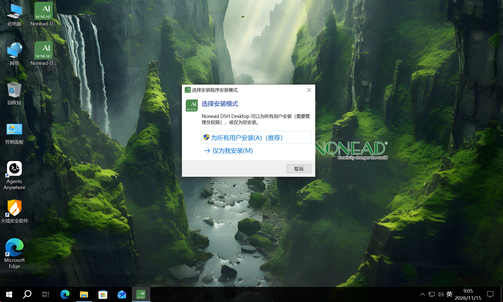
Figure 3-2 "Choose installation mode". This choice decides whether a UAC prompt follows; only after clicking does the destination page appear.
The destination page comes next (no screenshot was taken of it). Its default follows the previous step: all users go to C:\Program Files\Nonead DSH Desktop, "me only" goes to the user directory. Here the directory was moved to the data drive, D:\Software\Nonead DSH Desktop, and that is the path that appears in every later screenshot — if you installed to the default location, substitute your own path wherever this chapter shows it.
After that comes "Select additional tasks". This version offers exactly one: create a desktop shortcut. Leave it ticked; when the installation ends there is one more entry point on the desktop, and the tray icon stays resident.
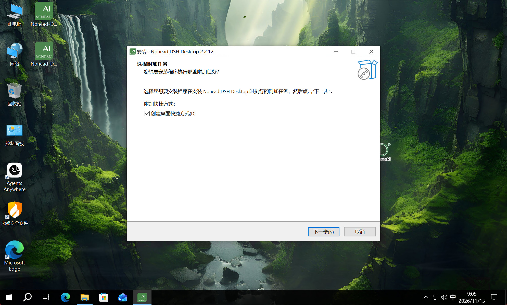
Figure 3-3 "Select additional tasks". Ticking the single box is enough; whether the app starts with Windows is decided later, in the settings.Figure 3-4 "Ready to install". The box lists the task selected in the previous step; confirm it and click "Install".
Click "Install" and the progress bar starts moving. What the installer does is simple: unpack the runtime and the 27 plugin packages into the destination directory. This takes about three minutes, and during it you should not touch the files in that directory.
Figure 3-5 "Installing", with the log naming the file being extracted. The path shown is the destination you chose in the previous step.
At the end, tick "Run Nonead DSH Desktop" to start it right away and save a double-click; if you would rather look at what was installed first, clear the box.
Figure 3-6 "Completing the Nonead DSH Desktop Setup Wizard". With "Run Nonead DSH Desktop" ticked, click "Finish" and the app starts immediately.
3.2 First launch and the six-step wizard (09:08–09:09)
The first launch opens on a black startup screen. It is scanning the Profile and loading plugins; the first run also has to build indexes, so it is slower than usual and Loading plugins... sitting there for ten-odd seconds is normal.
Figure 3-7 The startup screen. At this moment the interface service is not up yet, so there is only one line of text and a spinner.
Once the interface is up the wizard starts by itself. It asks one thing at a time; the 1 / 6 counter in the top right tells you how many steps remain, and every step has a "Skip" in the bottom right — skipping does not mean "never ask again", it means "continue with the defaults".
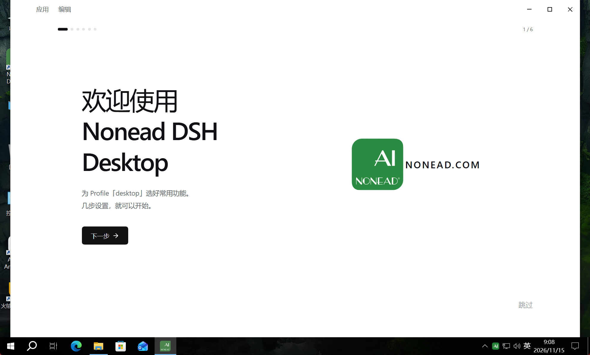
Figure 3-8 1 / 6, the welcome page. This configuration is written into a Profile named desktop; you can create other Profiles later.
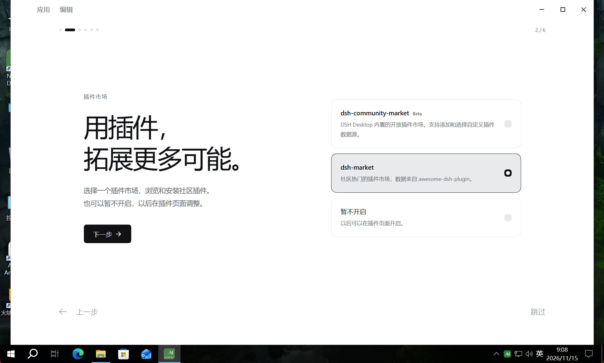
Figure 3-9 2 / 6, plugin marketplace — pick one of three: the community market, dsh-market (data from awesome-dsh-plugin), or none for now. Here dsh-market was chosen.
Figure 3-10 3 / 6, remote control: once enabled you can reach this machine from a phone or a browser. It was left off here and can be turned on later under "Remote Control" in the sidebar.Figure 3-11 4 / 6, Computer Use: let the AI look at the screen and drive the mouse and keyboard. Also left off; it needs a model that accepts images, and even switched on every action still asks for approval.
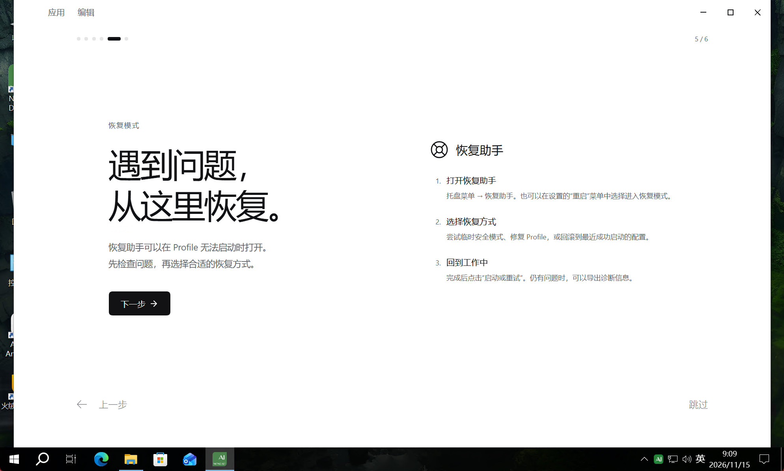
Figure 3-12 5 / 6, recovery mode: how to reach the recovery assistant when the app will not start. Nothing to do here — just remember the tray has "Recovery assistant…".Figure 3-13 6 / 6, bundled plugins, 27 in all, counted by category: memory and context 4, interface and workspace 7, agents and skills 7, documents and media 3, code and engineering 2, connectivity and automation 4.
Step
What it asks
Suggestion
1 Welcome
Explains what the wizard is going to configure
Just click "Next"
2 Plugin marketplace
Off / dsh-community-market (Beta) / dsh-market; only one can be enabled at a time
Leaving it off works; pick one if you want a marketplace, and you can change it later
3 Remote control
Whether to reach this computer from a phone, tablet or another computer over Agents Anywhere
Leave it off if unsure; once on, pair it under "Remote Control" in the sidebar
4 Computer Use
Whether the AI may operate the desktop (look at the screen, click, type)
Turn it off if you do not need it; even when on, every action still needs approval
5 Recovery mode
Explains how to reach the recovery assistant when the app will not start
Just have a look
6 Bundled plugins
Describes the 27 bundled plugins across six categories, then installs them one by one
Click "Finish and start" and let it finish
Table 3-2 The six steps of the first-launch wizard. This installation took the more conservative option in every row.
What happens if I skip setup? "Skip setup" drops you straight into the main interface and this batch of bundled plugins is not installed. To get them back: Settings → Desktop tools → "Setup wizard", run it again and click "Finish and start" on the last page.
3.3 Installing the 27 plugins (09:09–09:15)
After clicking "Finish and start" the wizard turns into an installation panel: a fixed explanation on the left, progress on the right. For every plugin it shows one card — name, category, version, the full description, and a line thanking whoever contributed it — with a progress bar and an 8 / 27 counter underneath.
Nothing is required from you in this stretch. The 27 packages install in manifest order with no confirmation dialogs in between, and the interface service restarts once when they are done. This is the main reason the first launch takes longer than usual.
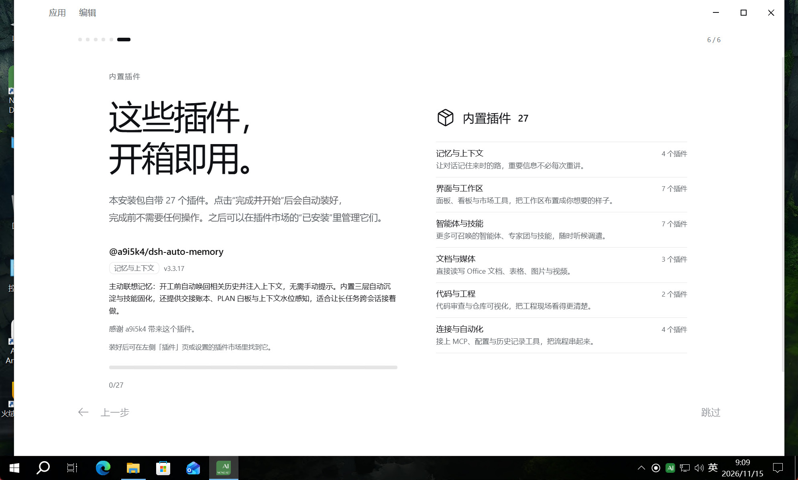
Figure 3-14 0 / 27; the first one in is @a9i5k4/dsh-auto-memory v3.3.17 (memory and context).
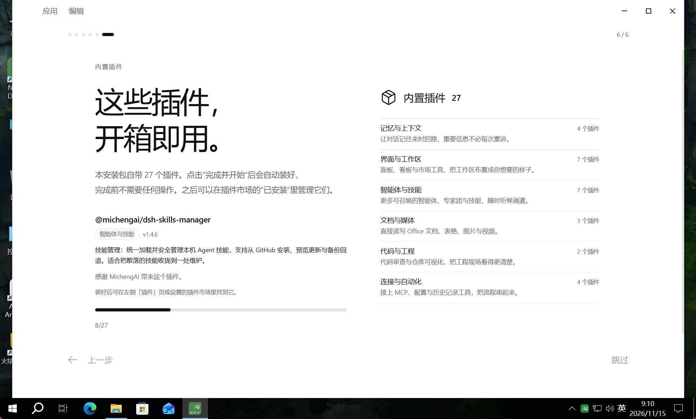
Figure 3-15 8 / 27, now on @michengai/dsh-skills-manager v1.4.6 (agents and skills).
Figure 3-16 22 / 27, dsh-mcp-connector v0.2.106 (connectivity and automation).
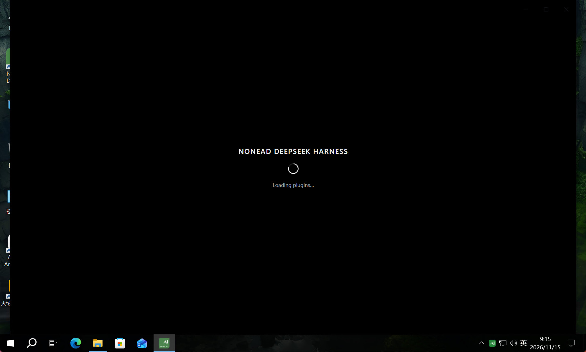
Figure 3-17 All 27 done: the interface service restarts and you are back at the startup screen. This load is far quicker than the first one.
Of the 105 screenshots, only four were kept for this stretch — all 27 progress pages look the same and posting each in turn would be repetition. What each plugin can do is described in Section 9; the package manifest itself is plugin/manifest.json inside the installer.
3.4 The three guides on first entry (09:16–09:18)
After the restart, before the main interface, a dialog appears: Create the "memory hub". It belongs to the memory plugin dsh-auto-memory, and what it wants to do is create a dedicated workspace (the directory ~\.dsh\aik_auto_memory_use) plus a background session to host memory consolidation, so that Q&A, summarising and consolidation do not crowd into your session list.
Four items in the dialog are worth checking: workspace location, permission, issue number, workspace registration. The permission must be "full access" — a restricted permission puts the background task outside the sandbox, where it cannot read the memory directory; nothing visibly fails, but the feature silently stops working. The small print at the bottom says the same thing: until it is created, every background memory task is paused and sends no requests.
Figure 3-18 "Create the memory hub". Item ②, danger-full-access, is what makes the feature work — do not switch it to a restricted mode.
Click "Agree and create"; a few seconds later all four items are ticked, the status becomes ok, and the background memory tasks start. This dialog will not appear again; to change the workspace directory or the rotation period, go to Settings → Auto Memory.
Next comes the memory plugin's own nine-step guide. The page is a switch per mechanism: each page explains one mechanism and offers a switch marked "recommended on"; changes are saved immediately, and the counter in the top right reads 01 / 09.
Figure 3-19 "Memory hub created". All four items ticked and the status ok; click "OK, start using it" to continue.
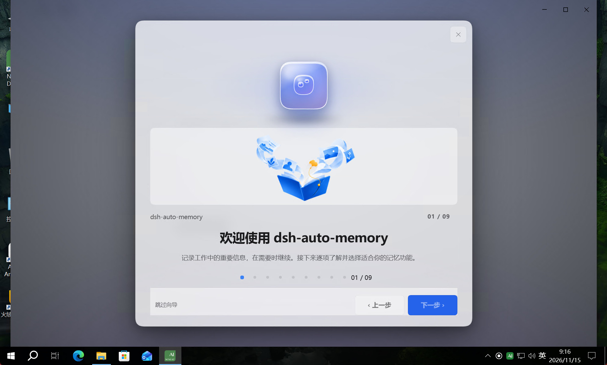
Figure 3-20 Guide 01 / 09, the welcome page. The whole guide can be skipped at any time and every switch changed later under Settings → Auto Memory.
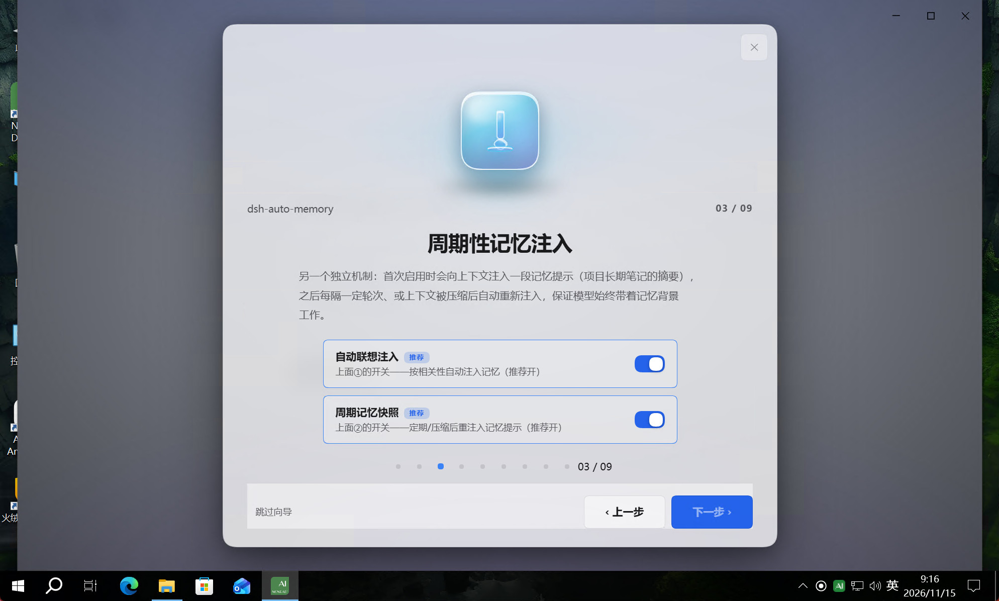
Figure 3-21 03 / 09, periodic memory injection: a digest of the project notes is injected on first enable, then re-injected every so many turns or after the context is compacted.Figure 3-22 07 / 09, the three-tier semantic engine: lexical search as the fallback, a built-in semantic engine (about 129 MB), and an optional Python tier. Here the built-in tier is downloading, 9.8 / 112.8 MB.
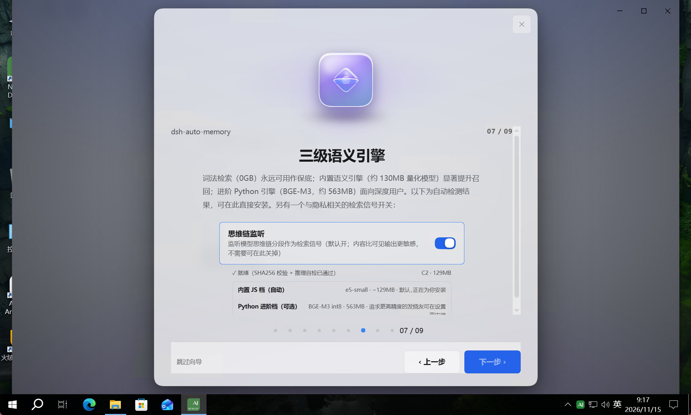
Figure 3-23 The same page after the download, with the built-in tier reporting "ready (SHA-256 verified, inference self-test passed)", C2 · 129 MB. The download needs no supervision; once it is done you can move on.
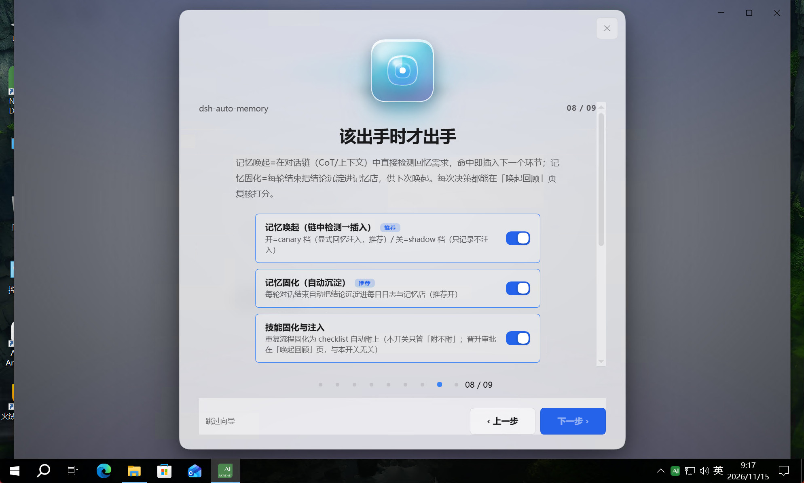
Figure 3-24 08 / 09, acting only when it should: memory recall (detect in the chain, then insert), memory consolidation (settle automatically at the end of each turn), and skill capture with injection.
The last page turns every switch so far into one list of coloured tags — on in green, off in grey. Seeing that page means the guide is finished. Two of them, "overnight/batch auto-hosting" and "scheduled summary", are off by default; enable them if you want unattended runs.
Figure 3-25 09 / 09, everything ready. The tags are the status list and can be changed in the settings at any time; "Start using" in the bottom right closes the guide.
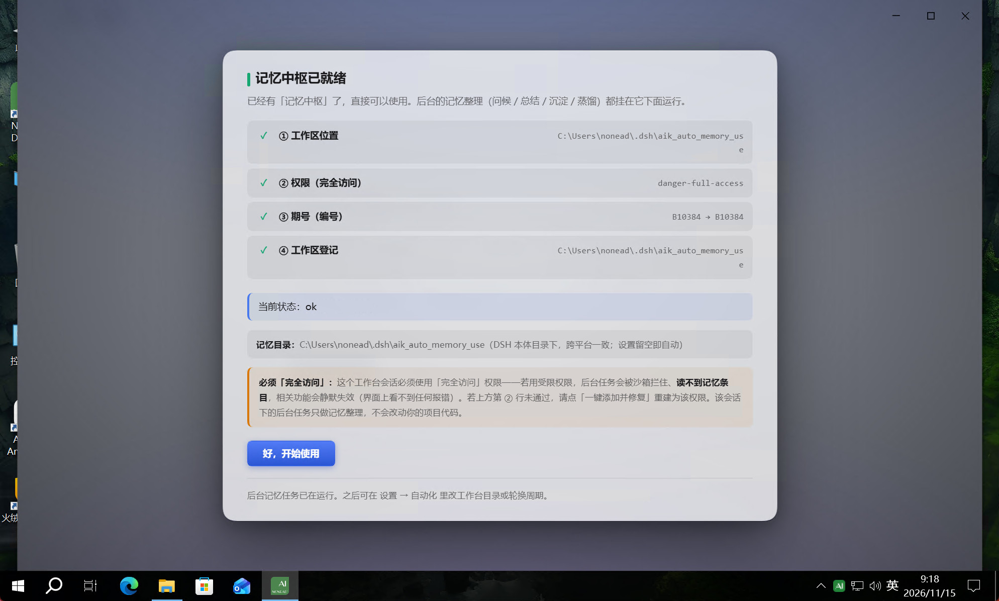
Figure 3-26 "Memory hub ready" — the same four items checked once more after the guide, this time as "already there" rather than creating anything.
Right after that comes a prompt about linking two plugins: dsh-context (shows what the context consists of) and dsh-cost-meter (works out the money) have found each other version-compatible and ask whether to join up — the left half is the panel before enabling, the right half the extra "context cost breakdown" you get afterwards. It is an optional enhancement: "Enable linkage" adds the cost block to the context panel, and "Not now" costs you nothing.
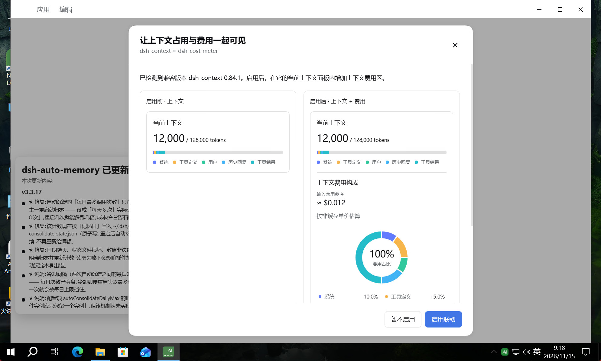
Figure 3-27 "Make context usage and cost visible together": the left half is the context panel before enabling, the right half the cost ring that appears afterwards. The floating panel behind it is the dsh-auto-memory release notes.
Then the desktop shell's own closing page: one line saying "desktop setup is complete", a reminder to collect an API key from the DeepSeek website, and two buttons — "Visit NONEAD" opens the website, "Skip for now" goes straight into the main interface. A toast in the top right also announces "set up cost display as needed", which concerns the balance bar in the sidebar; click "Got it" to dismiss it.
Figure 3-28 "Desktop setup complete" plus a hint about cost display. The panel in the bottom left is the memory plugin's release notes and can be closed.Figure 3-29 What remains once the hint is closed: get an API key from the DeepSeek website, then start using Profile "desktop".
Click "Skip for now" to enter the main interface. The sidebar now has two workspaces ("memory hub" just created, "default workspace" built in), and the bottom shows today's spend as ¥0 — no key is configured yet, so not one request has gone out.
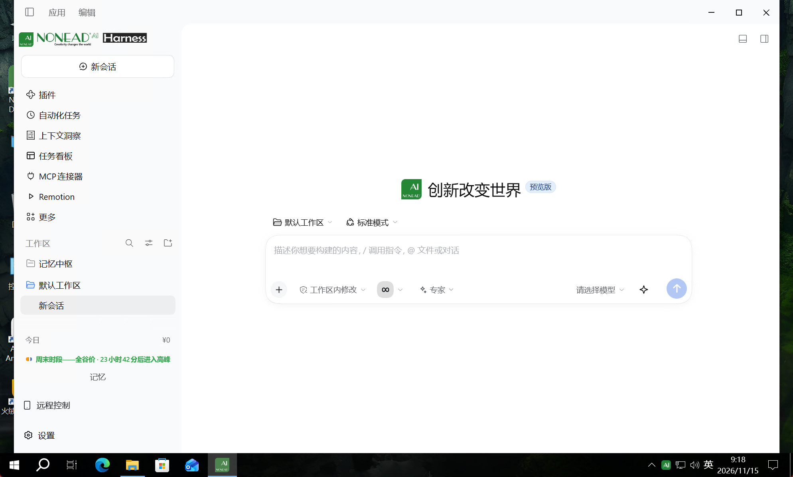
Figure 3-30 The main interface on first entry. The extra sidebar entries — "Task Board", "Context Insights", "MCP Connector" — are all doors opened by those 27 plugins.
3.5 Entering the model API key (09:18–09:19)
Without a key you can look at the interface but not talk to anything, so the first thing after installing is Settings → Models. The page already carries the official DeepSeek provider, deepseek-official; only a key is missing.
The orange line under the key field is worth reading: it first looks for the environment variable DEEPSEEK_API_KEY and only asks you to type something if it finds none. In other words, if you manage keys through environment variables you can leave the field empty, and after a restart it will read as configured.
Figure 3-31 The initial state of the Models page: "no environment variable detected", so either type the key here or set DEEPSEEK_API_KEY.
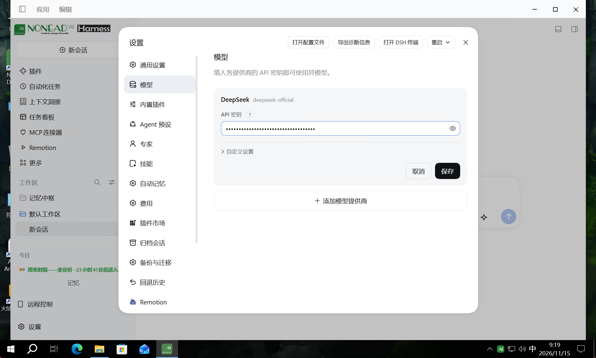
Figure 3-32 With the key typed in, only dots are shown; the eye icon on the right reveals it temporarily. Click "Save" once it looks right.
After saving, a green line appears at the top — "Saved DeepSeek (deepseek-official)" — and the card below turns into "DeepSeek" with a green dot and an "Edit" button. The green dot means the route is usable; to switch models or add a relay later, use "Add model provider" underneath.
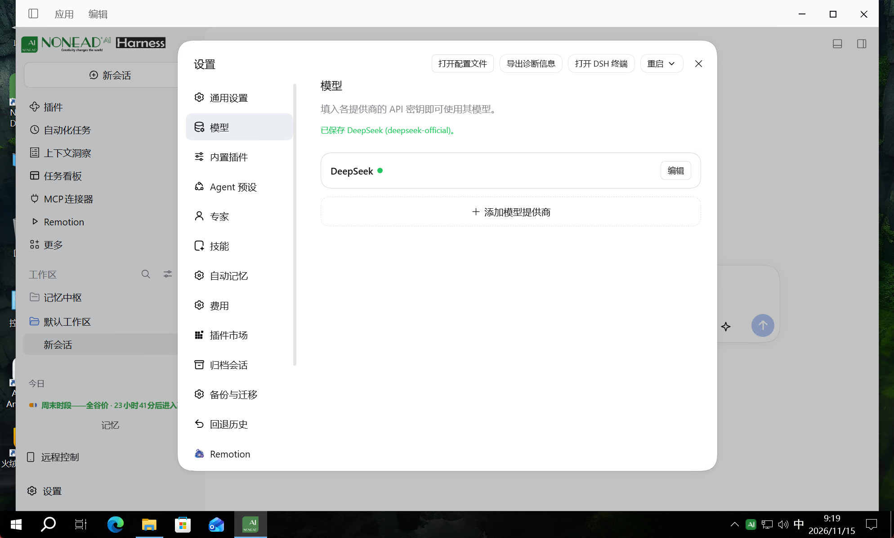
Figure 3-33 Saved. From now on the model selector in the bottom right of the input box offers DeepSeek-V4.1-Flash.
3.6 The plugin page and experimental plugins (09:20–09:25)
With the key in place, the next stop is the "Plugins" entry in the sidebar. The page has three parts: switches at the top (marketplace either-or, remote control, Computer Use), three tabs in the middle — Installed / Plugin market / Discover — and built-in plugin configuration at the bottom, which is where plugins like sub-agents, web search and fetch, or the Agent loop — plugins with a switch but no page of their own — are configured.
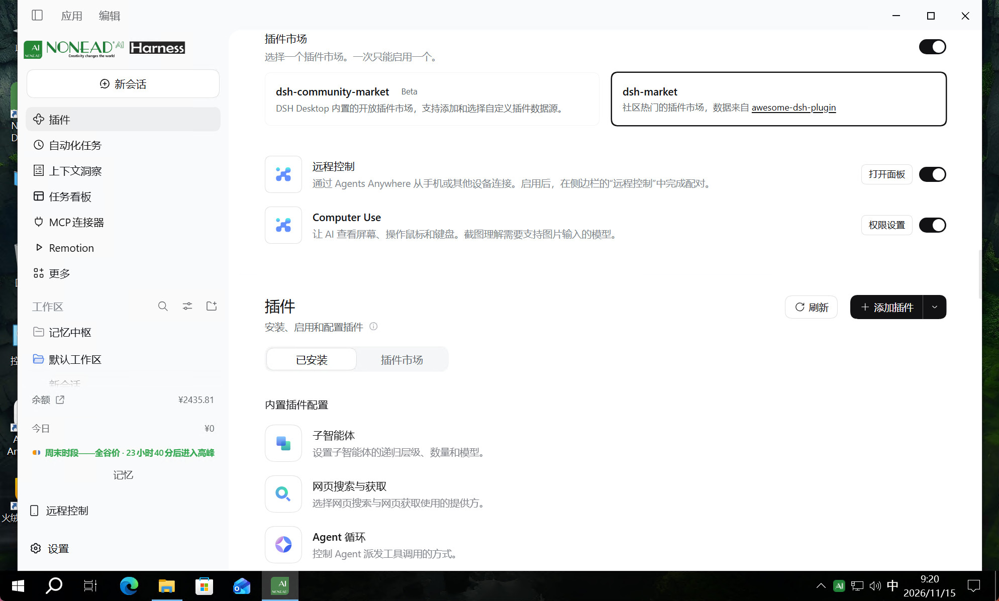
Figure 3-34 The upper half of the plugin page. Note the balance in the sidebar already reads ¥2435.81 — with the key in place the cost channel has started working.
Scrolling down brings the "Experimental plugins" area. They are all off by default, because they are "usable early, not guaranteed stable"; this run switched on the handful worth having: voice input, custom plugin index, automatic authorization review, and change requests with worktrees.
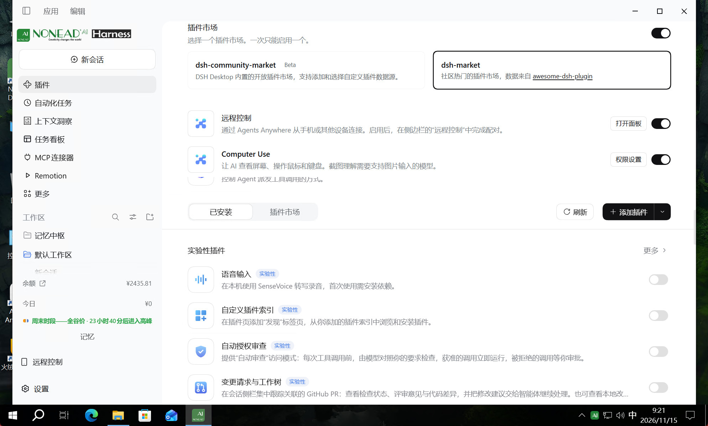
Figure 3-35 The default state of experimental plugins: four grey switches, with "More" on the right for the full list.
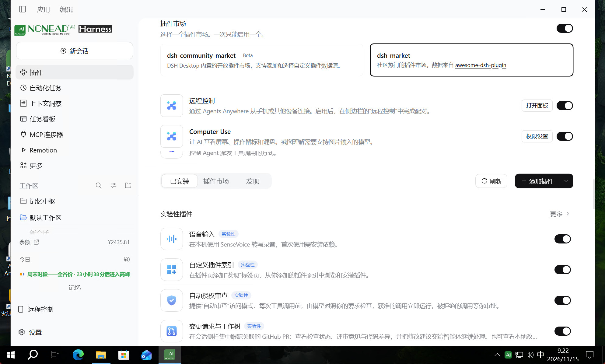
Figure 3-36 After switching them on. A "Discover" tab has also appeared — that door was added by the custom plugin index plugin.
The full list makes the trade-offs clearer: what is on comes first, what is off follows. "Developer tools" carries a red "Error" tag — it loaded, but one of its self-checks did not pass. That does not affect day-to-day use, and when you are troubleshooting it is a useful warning that this one may not be trustworthy.
Figure 3-37 The upper half of the full list: voice input, custom plugin index, automatic authorization review and change requests are on; personalised suggestions, developer tools and others are still off.Figure 3-38 The lower half: developer tools flagged in red, DeepSeek chat import on, and the Codex / Claude Code sub-agent plugins shown as "not installed".
Last, look at "Plugin market → Installed": that is the ledger of the 27. Each card gives the name, version, source (a local development plugin shows its path), a description, "add a note", and "new version vX.Y.Z available" — upgrades happen right here, no command line needed.
Figure 3-39 The installed list. Entries such as @michengai/... marked "local development" shipped inside the package; the source path is printed under the description.
3.7 Walking through the settings page (09:26–09:29)
Settings is where this release carries the most information: the list on the left grows with every plugin, and the full order here is General, Models, Built-in plugins, Agent presets, Experts, Skills, Auto Memory, Cost, Plugin market, Archived sessions, Backup & migration, Rewind history, Remotion, MCP connector, Prompt history, Sidebar cards, Desktop settings, bili settings. What follows describes only what each page decides; change the switches as you need.
General is the first page and the one most worth touching. The values used here: permission "Workspace write", language Chinese, appearance "Follow system", font size 14 px, work details "Standard", collapse timing "After the reply", and "All replies" kept after collapsing.
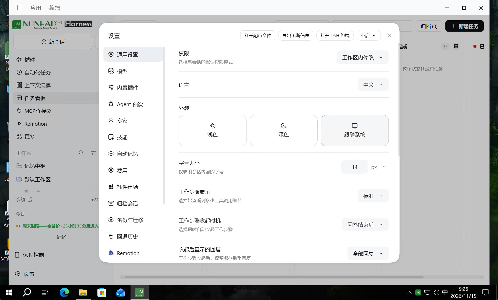
Figure 3-40 General. Permission decides where new sessions may write; "Workspace write" is the least troublesome default.Figure 3-41 A few minutes later the same page is unchanged — the plugin guides above did not quietly rewrite the general settings.
Built-in plugins lays out the "session plugins" as cards by purpose: agent persona, workspace instruction loading, time context, Bash tool, PowerShell tool, file tools. What is on here is installed into every session; disabling it turns it off globally.
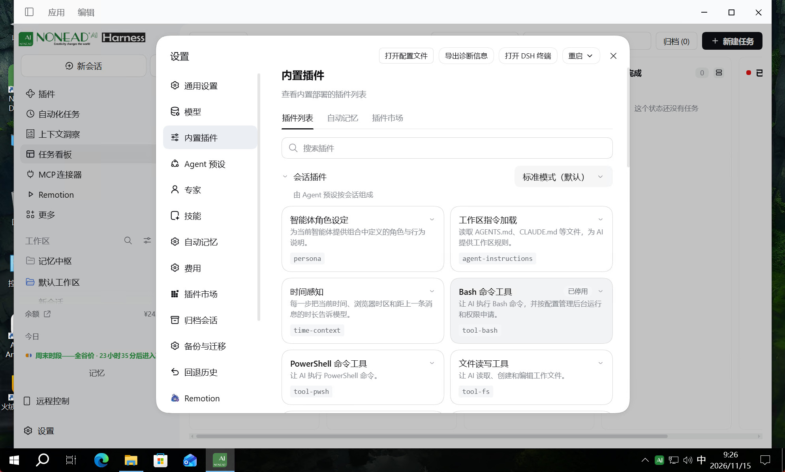
Figure 3-42 The built-in plugins page. The English tags in the card corners (persona, tool-fs and so on) are plugin ids, which are the precise thing to quote when reporting a problem.
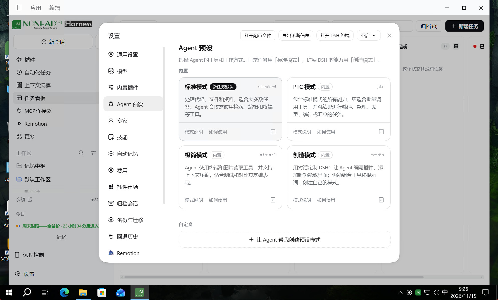
Figure 3-43 Agent presets: Standard (the default for new tasks), PTC, Minimal, and Creator. Day to day use Standard; use PTC for batch tool work.
Experts and Skills are two families of capability packs: an expert is a role with a prompt prepared for a domain, a skill is a reusable set of operating instructions. Out of the box there are well over three hundred experts but only two enabled (the more you enable, the more context they cost), while all 45 skills are enabled, most of them from the WorkBuddy directory.
Figure 3-44 The Experts page. Each expert has its own switch, and "Expert teams" in the top right are ready-made combinations. Switch on what you will actually use; the rest cost nothing while off.
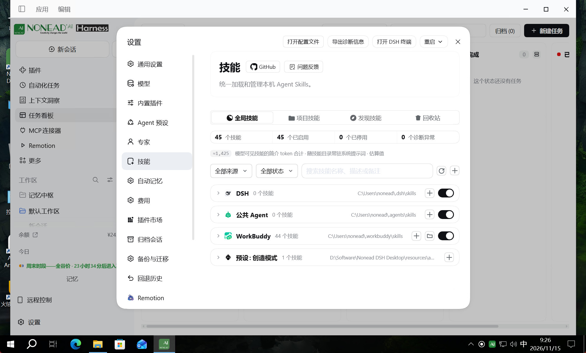
Figure 3-45 The Skills page. The "≈1,425 token" line at the top is what these skill descriptions cost in the system prompt; the more you install, the larger that number gets.
Auto Memory has four tabs: search and recall, recording and usage, appearance and directories, continuation and maintenance. This page and the guide in 3.4 are two doors onto the same set of switches — the guide decides how to configure it the first time, this page how to change it afterwards.
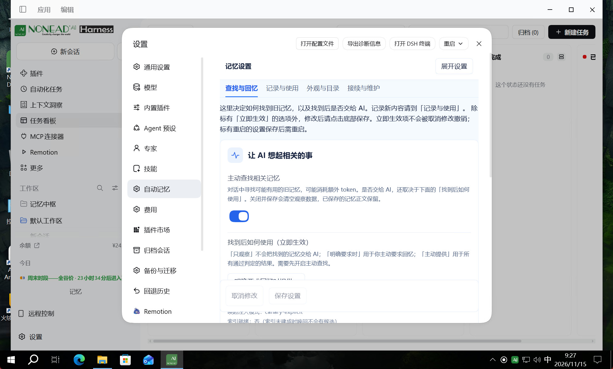
Figure 3-46 Auto Memory. "Actively look for related memories" costs a few extra tokens; "what to do with what it finds" decides whether a hit is merely observed or handed to the model.Figure 3-47 The Cost page. The preview on the left is the sidebar card itself: today's tokens, balance, plan progress, budget. Pick its layout from the four options on the right.
The Plugin market page reads the same data as the marketplace entry, except that here you can change shell-level preferences such as whether it shows in the sidebar or "do not remind again until restart".
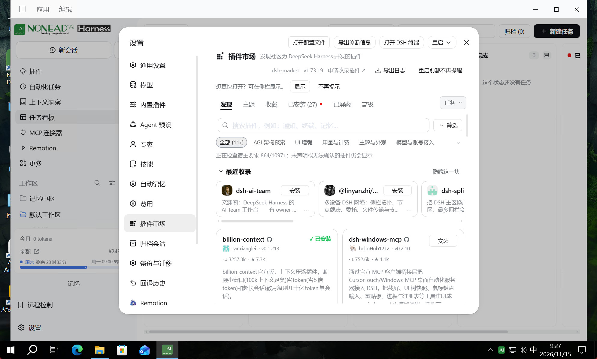
Figure 3-48 The plugin market page: dsh-market v1.73.19. The line "0 plugins hidden as incompatible with DSH 0.2.2-rc.3" is the result of its own version check.Figure 3-49 Archived sessions. Freshly installed, this is naturally empty; once you have many sessions this is where you archive them in batches by workspace and time.
Backup & migration packs the configuration up for you to carry: it is what you use when moving to another machine, reinstalling, or syncing. Opening the page popped a release note (config manager v0.9.0); notes like this appear only once after a version change.
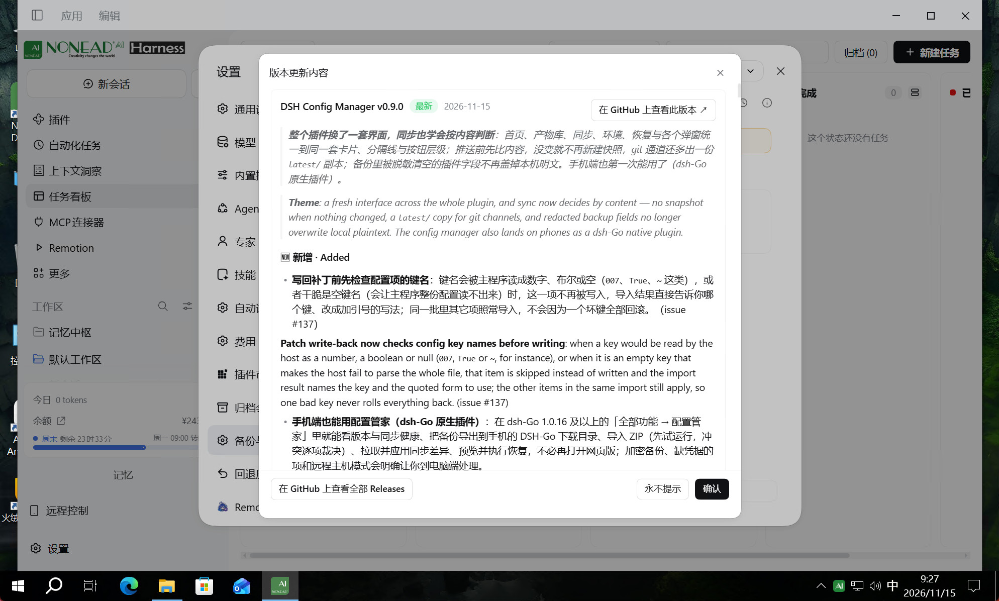
Figure 3-50 The Backup & migration page with the config manager v0.9.0 release note on top. Click "OK" to close it, or "Never show again" to stop it coming back.Figure 3-51 Rewind history. Snapshot backup and automatic cleanup are both on, so snapshots untouched for three days are removed — these two switches are your way back when you edit files.
Remotion is the video-rendering plugin; the first use has to download its official dependencies (in the screenshot it is at 3 / 6). If you are not going to make videos, you can leave this page alone indefinitely.
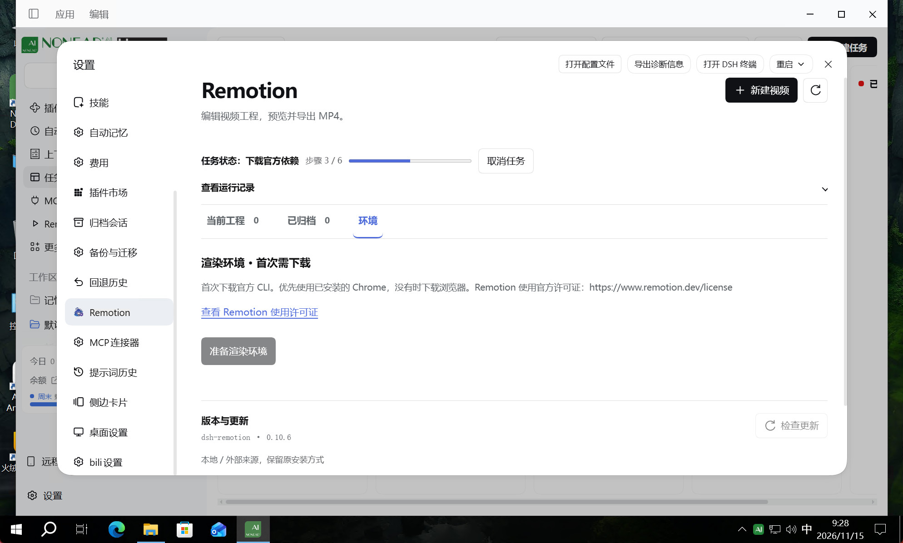
Figure 3-52 Remotion, dsh-remotion 0.10.6. The rendering environment is only needed the first time you use it, and the download is not small — do it when the network is idle.Figure 3-53 MCP connector. It only decides where the entry point appears (both places / sidebar only / settings only); actual connections are added in the panel.
Figure 3-54 Prompt history v0.8.7. Its effect is that ↑ in the input box recalls the previous prompt; the cap is 500 entries per workspace, and 0 days of retention means forever.
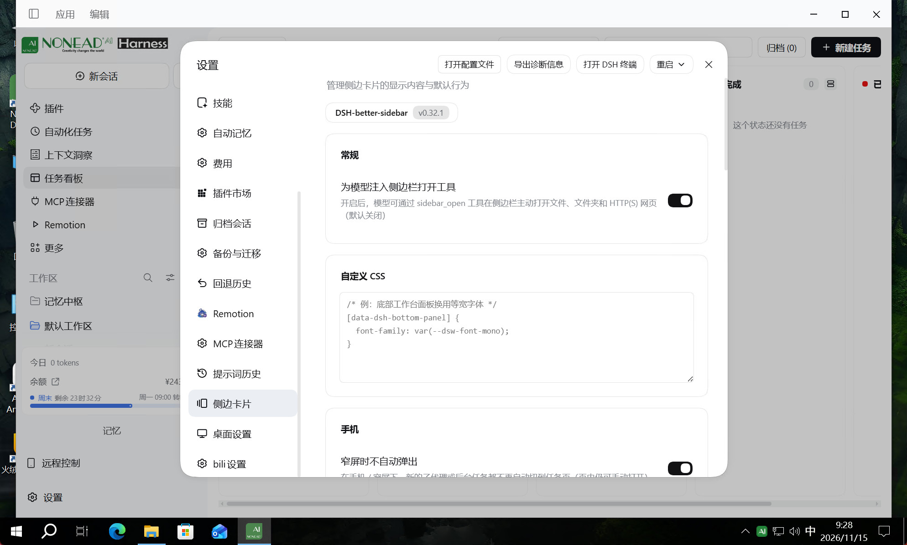
Figure 3-55 Sidebar cards, DSH-better-sidebar v0.32.1. Only with "inject a sidebar-open tool for the model" enabled can the model push a file or a web page into the sidebar itself.
Desktop settings configures the desktop shell rather than the DSH core: Profile management, browser access, notifications, system permissions, app updates, launch and background behaviour, logging and the recovery assistant. Marketplace and remote control have moved off this page, and the top of the page keeps a one-line note plus a jump button to their new home.
Figure 3-56 The upper half of desktop settings. Profile desktop is marked "current"; "Allow opening in a browser" is off, and turning it on is what lets a browser reach the same Profile.Figure 3-57 The lower half. All four notification types are off, the system-permissions entry lives here, and app updates have already found 2.2.13.
Further down are the update details and launch behaviour. That stretch of copy is in English — the release notes are written that way and it changes nothing about the decision: the three buttons are "Download update", "Check again" and "Skip this version". "Keep running in the background when the window is closed" is on by default, which is exactly why closing the window is not quitting.
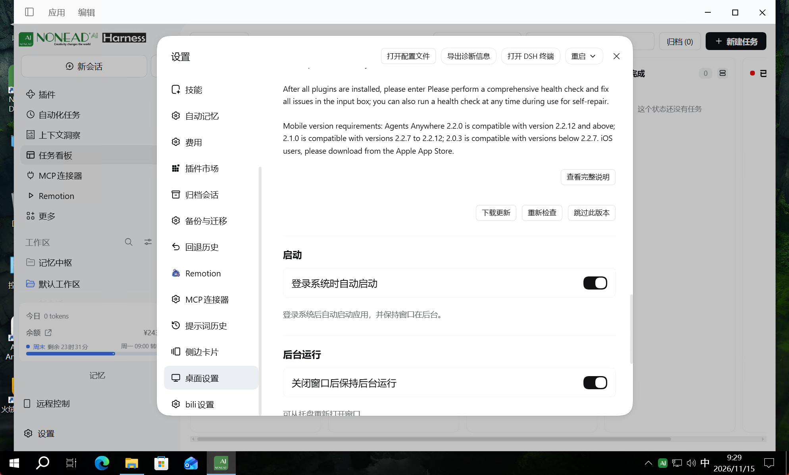
Figure 3-58 Update details and launch items. "Start automatically when you sign in" is off; "keep running in the background when the window is closed" is on, and the tray can reopen the window.Figure 3-59 Desktop tools. The five buttons open the setup wizard, the data directory, the Profile directory, the log directory and developer tools; log level is info, and this is the first place to look when something misbehaves.
The last item, bili settings, comes from the context compression plugin billion-context; its overview page shows three notes — a host-side plugin detected, prompt_cache_key auto-injection off by default, and incremental parsing for large contexts. It governs how long conversations save tokens, and needs no attention in daily use.
Figure 3-60 The compression proxy overview inside bili settings. All three notes can be dismissed with "Close" or "Got it"; the settings themselves are on the "Configuration" tab.
Only five things on the settings page are worth changing right now: the model key (done in 3.5), the default permission (General), work details (Standard / Detailed), app updates (used in 3.13) and start-at-sign-in (optional). Every other default has been tuned; leave it alone for the moment.
3.8 A few dropdowns, and the first question (09:29–09:32)
Back in the main interface, the small dropdowns around the input box are worth knowing — they decide which workspace, how much permission, which mode, which experts and which model are used this time.
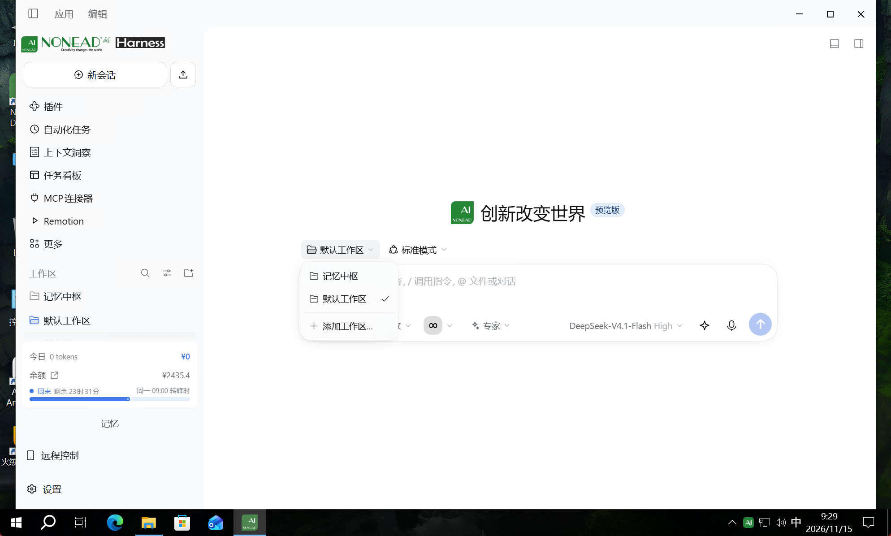
Figure 3-61 The workspace dropdown. A session can only read and write inside the current workspace; the "memory hub" workspace belongs to the plugin, so do not work in it.Figure 3-62 The permission dropdown. Four levels from "view only" to "full access"; the middle one is the everyday default, and EXP marks the experimental one.
Figure 3-63 The loop-mode dropdown. It decides whether a task picks itself back up after an interruption: it follows the global default by default, and "autonomous loop" suits long tasks.
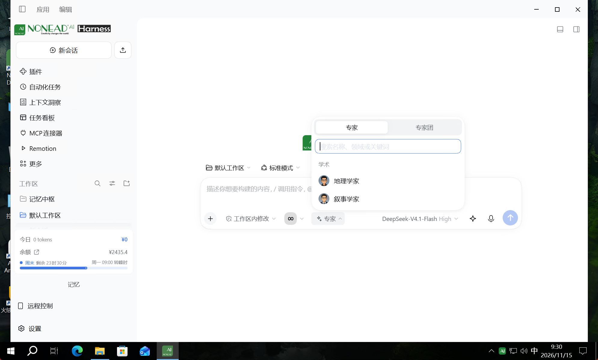
Figure 3-64 The expert dropdown. The two tabs are single experts and ready-made teams, both searchable; only enabled ones are listed.
Figure 3-65 The model dropdown. Three adjustable things: the model, the reasoning level (High here) and "enable agent team collaboration".Figure 3-66 With the input box empty the star in the corner is grey and the tooltip reads "you can optimise once there is content" — that is prompt rewriting, not sending.
The first question is the most ordinary one there is: let it examine itself. There is no trick to the wording, it merely states the whole job — what to do (a full health check) and how far to go (fix what it finds).
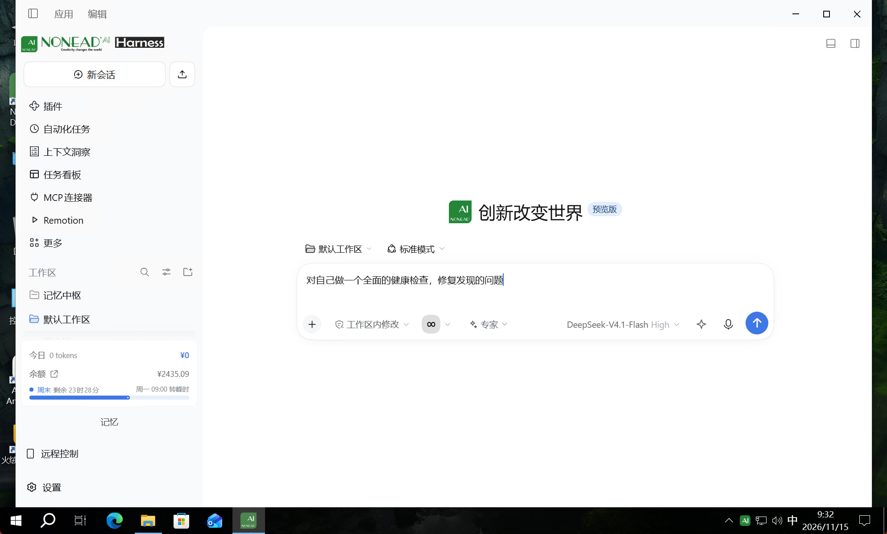
Figure 3-67 "Run a full health check on yourself and fix the problems you find." Permission is still "Workspace write", and later you will see why that is not enough.
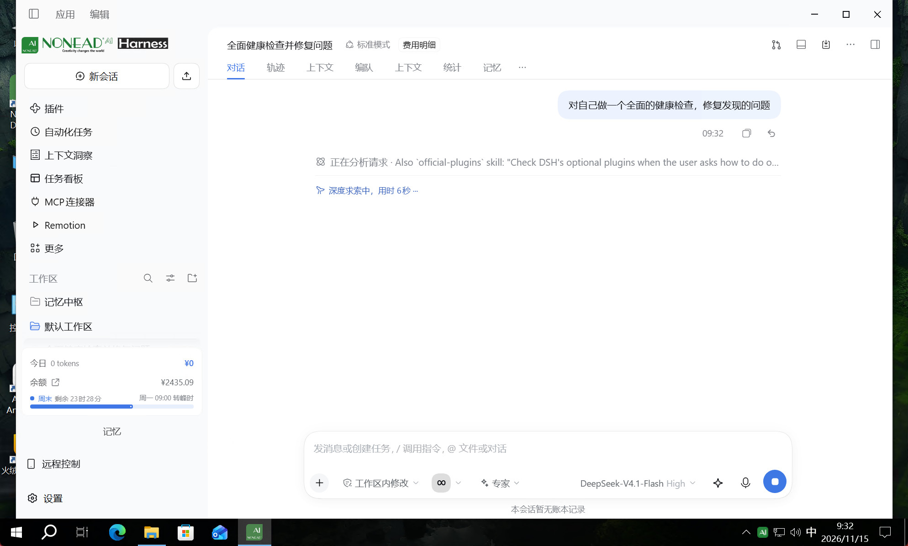
Figure 3-68 The session page after sending. The tabs at the top — conversation, trace, context, formation, statistics, memory — are different views of the same run.
3.9 The health check hits two permission prompts (09:33–09:34)
The first thing it wants to do is enumerate the plugins, and that means reading the Profile directory — which, under the current permission mode, counts as "outside the workspace", so an approval bar appears: allow this operation to use danger-full-access, with a line of English below stating what the operation is and what the risk is, and two buttons, "Deny" and "Allow once".
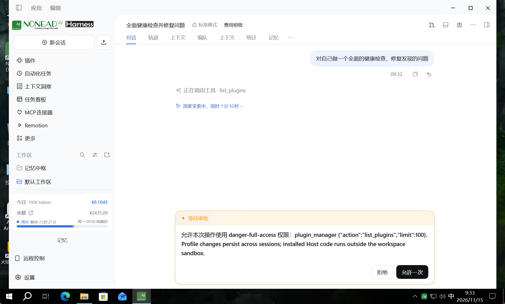
Figure 3-69 The first approval. list_plugins only lists things, but it reads the Profile directory, so it still needs elevation; "Allow once" is enough, there is no need to open the global switch.Figure 3-70 The second one right after: having judged that it will keep reading and writing configuration, it asks whether to simply enable full access. Tick "I understand the risk" and confirm.
Know the difference between the two buttons. "Allow once" clears this one call; "Enable full access" changes the level for the whole session so it stops asking each time. Use the first for a one-off investigation; use the second only when you have decided the AI should genuinely rework the configuration on this machine — as in this round, fixing the Host config — and put the level back afterwards.
3.10 The voice-input plugin and its local model (09:34–09:36)
While configuring, the microphone in the input box was clicked once, and it answered with a reminder: the voice-input plugin is enabled, but the local recognition model is not installed yet. This is the typical shape of an experimental plugin — the switch exists, the capability has to be downloaded.
Figure 3-71 "Voice input needs an installation first". "Go to install" opens the plugin detail; "Later" leaves everything else working.
The detail page has three rows of choices: input device, recognition service, recognition language. In the screenshot the input device reads system default — unavailable, because no microphone is plugged into this machine; that does not stop you preparing the model, and once a device is plugged in it appears in the dropdown. The recognition service is SenseVoiceSmall (INT8).
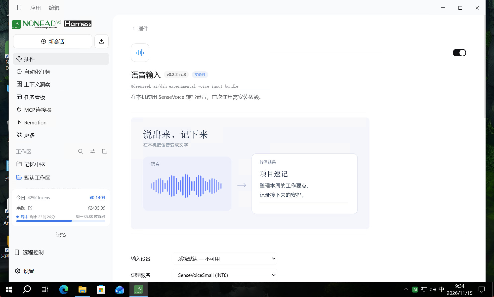
Figure 3-72 The plugin detail. Version v0.2.2-rc.3, marked experimental; below the three dropdowns sits the recognition service's description card.
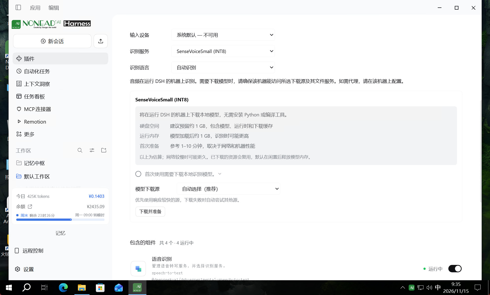
Figure 3-73 The preparation panel tells the truth: about 1 GB of disk, about 1 GB of memory, 1–10 minutes the first time, and no Python to install. The model download source is "choose automatically".
Click "Download and prepare" and the checklist below starts ticking itself off. The five steps are: check local resources, prepare the speech recognition model, prepare the voice-activity model, verify the model files, load the model. In between you can watch exactly which file is being transferred, how large it is, and what percentage is done.
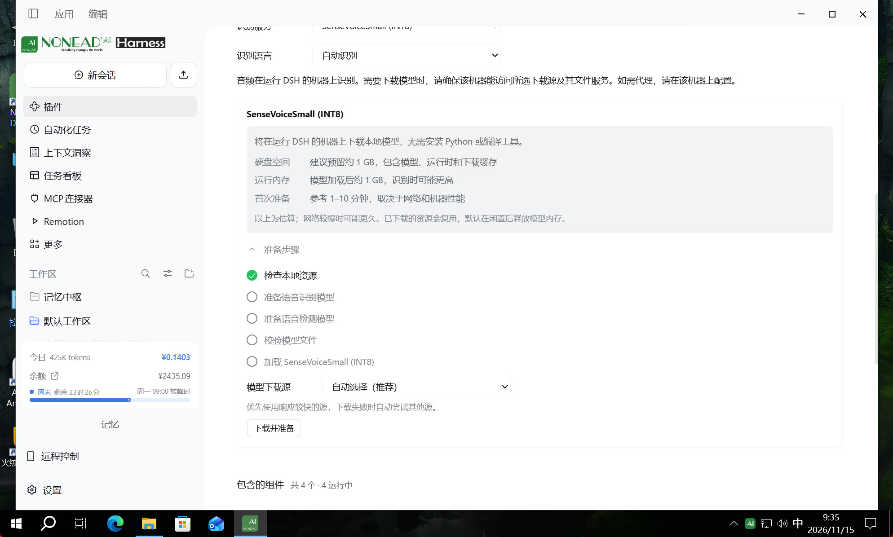
Figure 3-74 Step 1, "check local resources", is ticked and the recognition model is being installed.
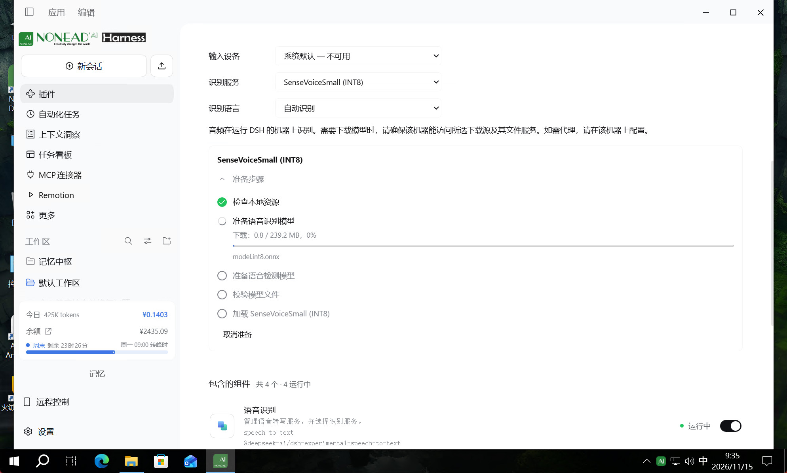
Figure 3-75 The download detail: model.int8.onnx, 239.2 MB in total. This is the slowest part of the whole chapter; you can do something else while it runs.
Figure 3-76 The recognition model is in place and the voice-activity model is next (it decides when someone has started talking). The two models do different jobs and both have to be downloaded.
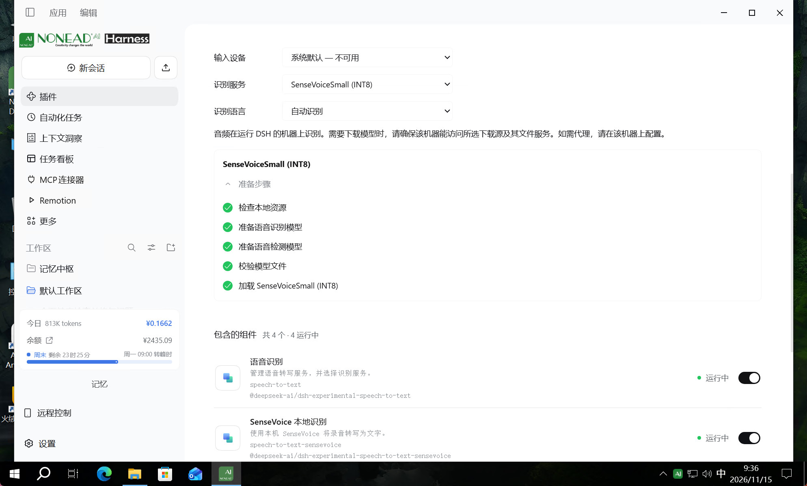
Figure 3-77 All five steps ticked. The components "Speech recognition" and "SenseVoice local recognition" both read "running", and the microphone icon works from then on.
3.11 The three kinds of restart (09:36)
Installing a model or changing a permission both need the change to take effect. The "Restart" button in the top right of the settings page is not a single action but a dropdown, and its three levels differ considerably.
Figure 3-78 Three kinds of restart. "Reload interface" refreshes only the front end and is the quickest; "Restart" brings the Host back up too, which is what actually applies plugins and configuration; "Restart into recovery mode" is for when it will not start at all.
3.12 The health check finishes and repairs three real faults (09:37–10:33)
With the permission granted, the run gets going in the background. The interface only shows two things: which tool is being called right now, and the task list on the left, where it has split the work into six steps — collect runtime and log evidence, check configuration and profile integrity, check plugin/bundle load errors and missing dependencies, check the MCP / skills / memory / task subsystems, repair what is confirmed and verify it, then produce a health report and write it to memory.
Figure 3-79 In progress. The task panel on the left is the map of the investigation; "12 steps" in the top right counts the tool calls made so far.
Fifteen minutes and forty-two seconds later it wraps up, and the conclusion is blunt: the log held 15 errors and 29 warnings, each traced to its origin, three of them real faults, now repaired and re-verified; the rest were behaviour by design or had already healed.
Figure 3-80 The conclusion. The green box summarises the result in a sentence, and the table below lists problem and root cause: a missing git.exe causing a spawn ENOENT every 30 seconds, an inspector plugin that kept failing to start, and so on.
Each of the three repairs gets a paragraph explaining why it was done that way. That stretch is worth reading in full, because it explains several things on this machine that otherwise look inexplicable:
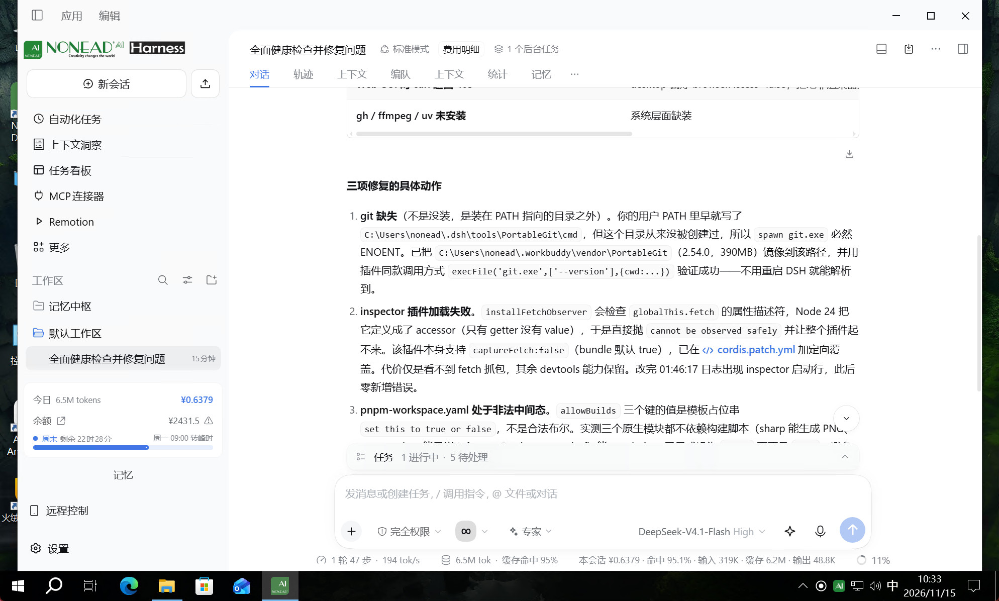
Figure 3-81 The three repairs: git missing (PortableGit 2.54.0 added), the inspector plugin failing to load (captureFetch:false), and pnpm-workspace.yaml left in an illegal intermediate state.Figure 3-82 The end of the report. It singles out what needs your decision — gh / ffmpeg / uv are not installed — and lists the two files it changed.
Worth doing once, as suggested. Running this on the day you install answers, in one pass, whether this build has any hidden faults on this machine. The prompt is the one in the screenshot and needs no changes; afterwards, look at which files it edited.
3.13 Adding gh / ffmpeg / uv, and the new version alongside (10:34–10:49)
For the three tools the report named, it is enough to answer with one line — "please install gh, ffmpeg and uv". It had changed two files in the current session (cordis.patch.yml and pnpm-workspace.yaml), and then opened a new session to do this job — a long task in a fresh session keeps the trace clean.
Figure 3-83 The follow-up. The upper half is the previous round's wrap-up (two files edited, +10 −3); the lower half is the new instruction.
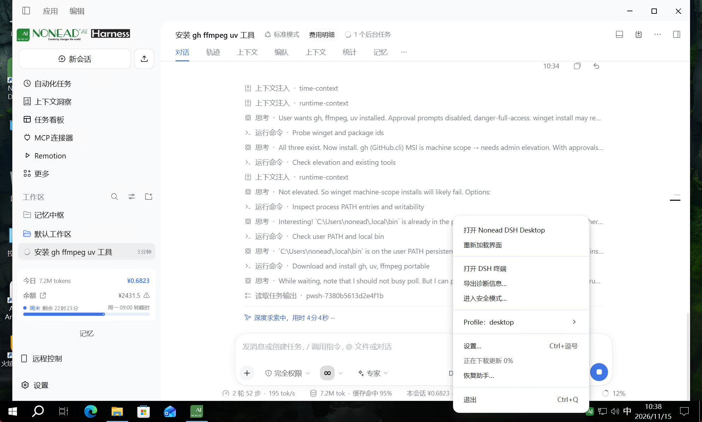
Figure 3-84 The new session, "install gh ffmpeg uv". The trace shows it probing winget and the existing tools first, then deciding to go around winget.
It does not use winget directly but takes portable binaries, and the trace says why plainly: all three packages in winget are machine-scope MSIs, the session has no administrator rights, and an install would fail halfway. The screenshot below is the task-output panel while gh downloads — long tasks like this can be watched in the right-hand panel instead of sitting on the conversation.
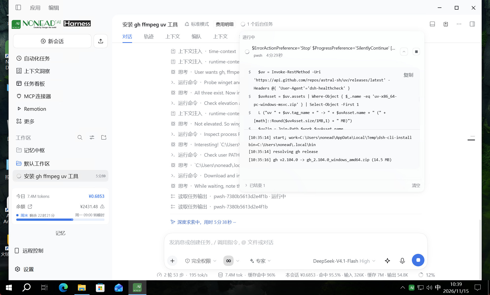
Figure 3-85 The task-output panel. The log resolves the version line by line — gh v2.104.0 → gh_2.104.0_windows_amd64.zip (14.5 MB) — and when something breaks this panel is the first-hand evidence.
While the download runs, it is a good moment to learn the right-hand column. Click the square icon in the top right of a session to open the "Start" panel, a row of common views: files, code review and changes, context, new terminal, Git, browser, task management, side chat, session data diagnostics, and "More".
Figure 3-86 The "Start" panel on the right. These are not plugins but workspaces built into the shell; the conversation stays on the left while two of these sit side by side on the right.
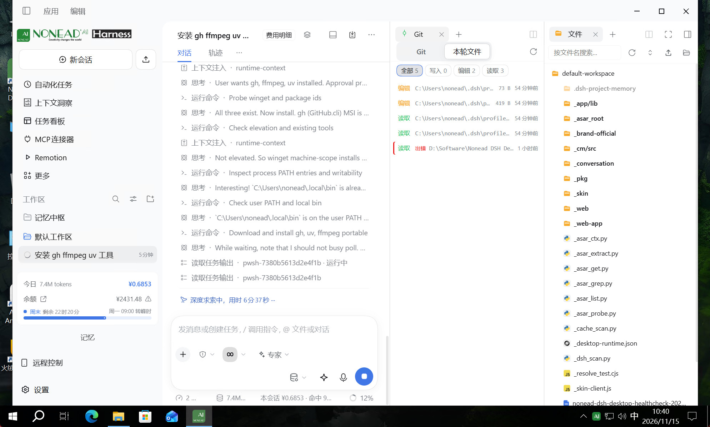
Figure 3-87 "Git" and "files" open together. The Git sidebar counts what this round touched — all 5, written 0, edited 2, read 3 — and clicking an entry jumps straight to that change.
The same row also holds an "Import DeepSeek chat log" entry, for bringing a deepseek_data-*.zip exported from the website into one workspace. There was no old conversation to migrate here, so it was opened, looked at and cancelled.
Figure 3-88 The import dialog. Choose the ZIP exported from the website and the workspace that should receive the conversations; every conversation imported becomes a session in that workspace.
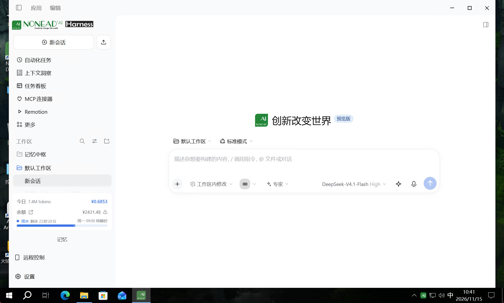
Figure 3-89 The new-session page after closing the dialog. With the right-hand panel folded away the main interface is at its plainest.
Figure 3-90 Back in the install session, scrolling down. The trace is on the left and the file tree stays on that workspace; in long sessions "scroll back to see what it actually did" is the normal move.
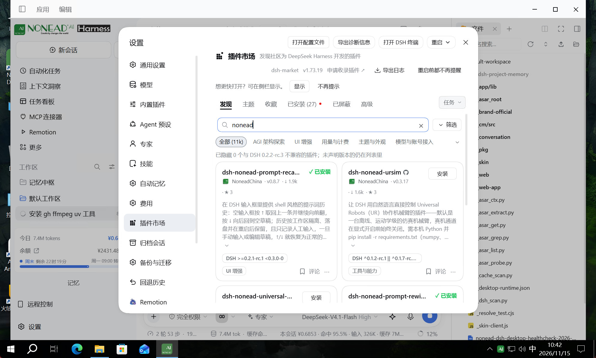
Figure 3-91 Searching the plugin market for nonead: the four Nonead plugins, two of them already installed. Once the bundled batch is in, this search box is where adding capability starts.
Figure 3-92 The lower half of the same search: dsh-nonead-universal-robots v0.9.0 (robot-arm control) and dsh-nonead-prompt-rewind v0.5.4 (conversation rewind).Figure 3-93 The new version downloading along the way: the update is at 33%, with the 2.2.13 release notes (runtime 0.2.2-rc.3, Agents Anywhere bridge 2.2.0 and so on).
The download continues in the background and the same progress shows in the tray menu. Updating does not require quitting a running task: it downloads on its own and asks you when it is time to install.
Figure 3-94 42% downloaded, with "downloading update 41%" in the tray menu — the same job seen twice. The tray menu is also the only proper way out of the program.
3.14 Cycling the interface language (10:56–10:57)
"Language" in the general settings is a dropdown of nine items: Chinese, English, Japanese, Spanish, French, German, Russian and Portuguese. Switching is immediate, needs no restart, and does not disturb a running session.
Figure 3-95 The language dropdown. Nine interface languages; conversation text and existing output are not translated, only the interface copy changes.
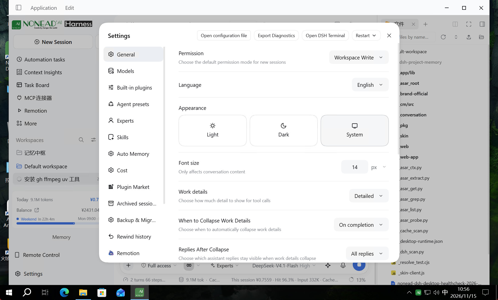
Figure 3-96 English. Shell-level copy changes with it — Application / Edit, Settings, General — and the permission item reads Workspace Write.Figure 3-97 Japanese. The sidebar follows too: 新規セッション / 自動化タスク / コンテキストインサイト.
Switching to Russian reveals one detail: in the sidebar, Task Board and MCP 连接器 stay in their original wording. It is not a failed switch — those two labels are supplied by plugins, and the plugins carry no translation for that language. The interface language only covers the host's own copy.
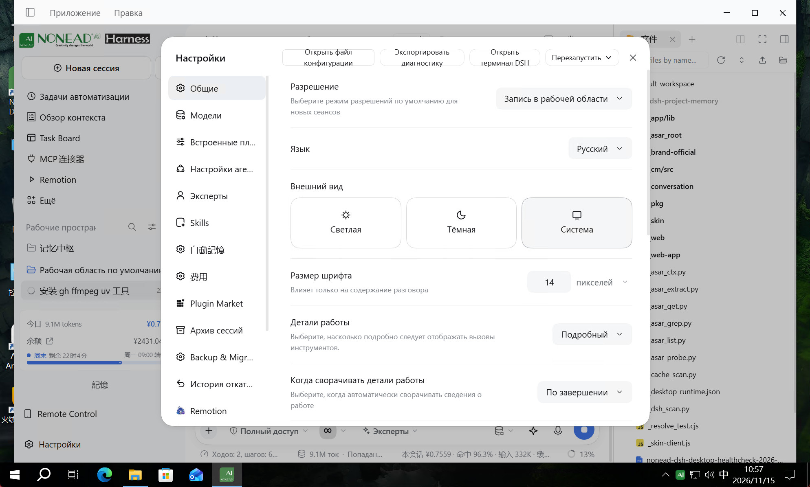
Figure 3-98 Russian. All host copy changes; Task Board and MCP 连接器 stay as they were, because those entries come from plugins.
3.15 Wrapping up: check the versions, restart to apply (11:02–11:03)
With the language back on Chinese, the long tool-installation task comes back into view. It finished in twenty-eight minutes and eleven seconds, with all four binaries landing in C:\Users\nonead\.local\bin — a directory already on the user PATH and on the current DSH process's PATH, so plugins can call them without a restart, and no administrator rights were needed at any point.
The explanation that follows, of why it went through mirrors, is worth reading: on this machine a direct connection to github.com release downloads is blocked — the connection is made and then zero bytes arrive — and only a proxy succeeds. That is not a one-off; installing tools hosted on GitHub from mainland networks runs into it almost every time. The four sources it used were gh-proxy.com for gh, the Tsinghua PyPI mirror for uv, and npmmirror's installer package for ffmpeg with gyan's official binary swapped in.
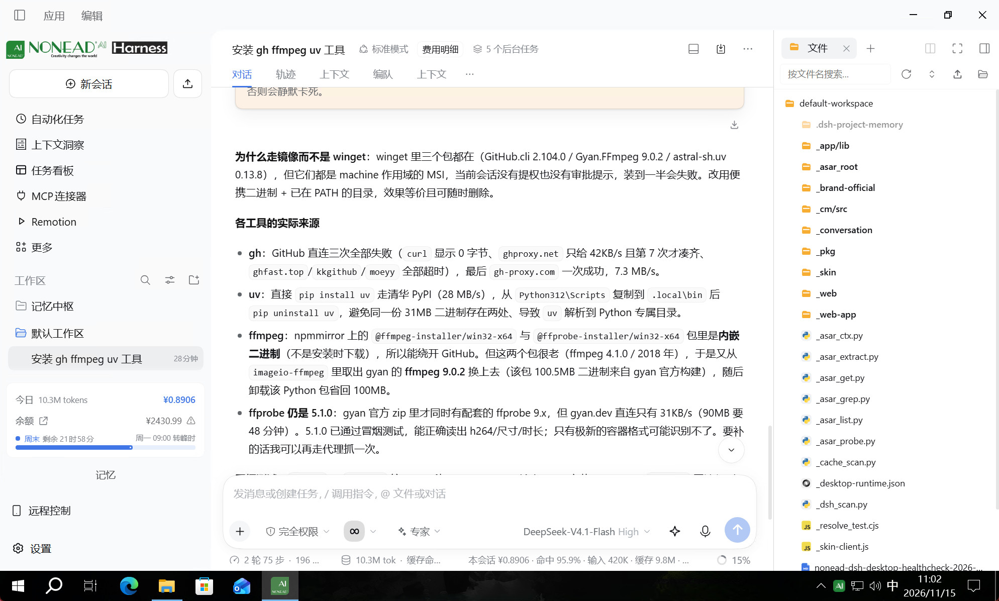
Figure 3-100 "Why mirrors instead of winget", and where each tool came from. The three sources differ, all of them substitutes forced by blocked direct downloads.
Settings changed and tools installed, the last step is a restart so the host re-reads its configuration. This time "work details" was moved from "Standard" to "Detailed" — while troubleshooting, seeing more detail saves time, and it can be moved back for everyday use.
Figure 3-101 Work details set to "Detailed". On the same page, the collapse timing and what remains after collapsing decide when that detail gets folded away.Figure 3-102 The restart confirmation. It states plainly that the current Host stops and running tasks are interrupted; if a long task is running, let it finish first.
Installed is not the same as signed in. gh still needs gh auth login once in a terminal, which goes through a browser OAuth flow; behind a blocked network, set GH_HOST or HTTPS_PROXY first. That step cannot be done for you — you have to click through the authorization yourself.
3.16 How it looks when you are done (11:18–11:19)
Coming back after the restart, the right-hand "Start" panel has two new views: Nonead UR Digital Twin and Nonead UR Simulator — supplied by the UR plugins seen in the marketplace a moment ago. Installing a plugin does not only add tools; it also adds entry points to the sidebar and panels.
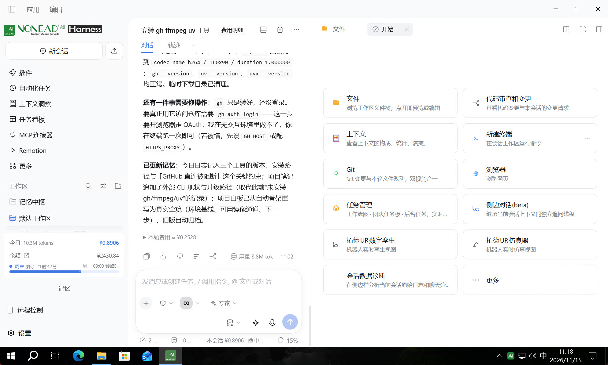
Figure 3-103 The session wraps up: the work is done, one thing still needs a human (gh auth login). The digital twin and simulator entries have appeared on the right.
Opening the "Context" panel shows the whole account: about 10.3 M tokens in total, a 95.89% cache hit rate, 42 minutes 38 seconds of active time, most of it in tool execution and model waiting. These are the numbers to judge "was this round expensive" by from now on.
Figure 3-104 The context panel. 10.3 M in total, a 95.89% cache hit rate, 42m38s active; the colour bar below breaks the time down by phase.Figure 3-105 The Nonead UR Simulator. A 3D view on the left, TCP coordinates and joint sliders on the right, and a status bar giving the safety mode and program state.
That completes one full first installation: the program installed, 27 plugins in place, the model connected, permissions and directories adjusted as needed, three external command-line tools added, the speech model usable, and both the language switch and the update tried out. What remains is Section 4, to learn your way around the interface.
Six things to confirm once you are done (add whichever is missing): ① the model key is saved, and the model name shows in the bottom right of the input box;
② when you create a session, the workspace is the directory you actually work in, not "memory hub";
③ the default permission matches your habits (workspace write / full access);
④ a health check has been run once and you know what it changed;
⑤ the external tools you need (gh, ffmpeg, uv and the like) print a version with --version;
⑥ "Quit" is there in the tray menu — and remember that closing the window is not quitting.
4. Main interface at a glance
Area
Position
What it handles
Sidebar
Left
Session list, new session, plugin and skill entry points, task board, phone connection, settings; collapsible
Conversation area
Centre
Messages between you and it, tool calls as they happen, file edits and command output, rendered charts and panels
Input box
Bottom
Type your request; attach files, switch models, choose the working directory; interrupt at any time after sending
Desktop control bar
Top of the window
Provided by the desktop shell: back / forward, reload, window controls; its shape differs slightly by platform
Table 3 The four areas of the main interface.
The working directory matters. By default it can only read and write the directory you picked for that session. Checking the directory when you start a session is far less trouble than discovering later that the wrong place was edited.
With the bundled plugins in place, the sidebar and the input box also grow a few entry points:task board, cost dashboard, input history, expert teams and so on. They all come from the plugins in Section 9, and turning the corresponding plugin off makes them disappear.
5. Starting your first conversation
Start a new session and set the working directory.
Say what to do, where, and what the result should look like — in one sentence. For example: "Read the README in this directory and list every download link in it that is out of date, as a table".
Once it starts working, watch the tool calls and the files it changes; if you want a different direction, interrupt it and state the new requirement.
If you are not happy with the result, say exactly what is wrong. It revises with the context in hand, so there is no need to open another session.
Three things that make a request clear:
Scope: which directory and which files may change; do not leave it open-ended.
Acceptance: what counts as done (it runs, the tests pass, the table has no empty cells).
Constraints: what must not be touched, formats that must be preserved, whether it may use the network.
6. Tray menu
Once the window is closed, the tray icon is the main way into the app. Right-click the tray icon to see:
Menu item
What it does
Open Nonead DSH Desktop
Brings the window back
Reload interface
The same as refreshing a web page; the background service is not restarted
Open DSH terminal
Opens the built-in terminal, where the dsh command is available (Windows / macOS only)
Export diagnostics…
Bundles logs and system information for a bug report
Enter safe mode…
Starts in a temporary environment to isolate plugin problems (see Section 10)
Leave safe mode and restart…
Safe mode only; returns to a normal start
Profile: <name>
Submenu: switch Profile, New Profile…, Manage Profiles…
Settings…
Opens the desktop settings page
Check for updates…
Checks for a new version by hand; when one is available, this item becomes Download / Install / Restart
Open in browser
Appears once browser access is on; opens the current interface in your default browser
Recovery assistant…
Starts recovery mode without loading the current Profile or its plugins
Quit
Quits the app for real; the background service ends with it
Table 4 The tray menu. Items ending in "…" open a window or a dialog.
The "Mode: Enhanced / Compatible / Extended" item mentioned in the previous edition of this manual has been dropped: since 2.2.9 the window mode is fixed, and only "Window appearance (material)" remains in settings.
7. Settings page
The settings entry point is at the bottom of the sidebar (Settings → Desktop settings). The sections are:
Section
What you can change
Takes effect
Profile
Choose the Profile to start with, create one, delete one (deleting moves that Profile into the recovery backup directory; shared sessions and settings are kept)
Restart
Window appearance
Solid or glass background; the Compatible / Extended / Enhanced window modes are no longer offered
Immediately
Browser and LAN
Allow opening in a browser, this computer only or the LAN, export the local CA certificate
Immediately or after a restart
Desktop notifications
Whether to send a system notification when this turn, a background task or an automation finishes or fails
Immediately
Permissions
View and request system permissions (microphone, screen recording, accessibility and so on)
Immediately
Startup
Start the app when you log in, and keep the window in the background
Immediately
Background running
Whether to keep running in the background after the window is closed
Immediately
Desktop tools
Setup wizard, open the data / Profile / log directory, developer tools, log level, developer log, open the recovery assistant
Immediately
Version and updates
Current version, check for updates, restart
Immediately
Plugins and marketplace
Moved to the plugins page: the marketplace switch and the remote-control switch both live there
—
Table 5 The sections of the desktop settings page.
Where did the plugin marketplace and remote control go? Since 2.2.9 both have moved from the settings page to the plugins page; the settings page now shows a note and a "Go to plugins page" button. The old "Settings → Plugin marketplace" path no longer works.
In safe mode this page is read-only, and browser access, LAN, remote control and notifications are disabled as well — that is by design, not a fault.
8. Profiles: several configurations
A Profile is an independent configuration set: sessions, plugins and settings each belong to one Profile and do not interfere with the others. The usual split is "work" and "personal", or "everyday" and "trying new plugins".
Figure 2 A Profile decides which set of plugins and settings is loaded; a failed start falls through to the recovery assistant.
Three practical rules:
If one Profile is broken, another one keeps you working — you do not have to repair the broken one first.
A new Profile has only the official base components; the 27 bundled plugins are installed only into the Profile the wizard completed. If you switch Profiles and want to keep using them, check the actual list on the plugins page and add whatever is missing.
Deleting a Profile moves it into the recovery backup directory (it is not erased on the spot), and shared sessions and settings are kept; for that Profile, though, it is no longer usable — so confirm before you do it.
9. Bundled plugins
This section is the centrepiece of this edition. The 2.2.12 installer ships 27 plugins across six broad categories, installed into the current Profile automatically when the wizard first completes. Below we first explain what is installed and how it gets there, then introduce them one category at a time, and finally how to manage them and how to install them again.
9.1 What ships from the factory
The installer distributes all 27 plugin tarballs together (the plugins/ directory), and the first wizard installs them into the Profile one by one when it finishes. They are not "optional downloads" but already there once installed: open the plugins page and all 27 appear under "Installed plugins", enabled by default.
Category
Count
What this category solves
Entry points you will recognise
Memory and context
4
Lets a conversation remember how it got here, so important information need not be repeated every time
Auto Memory, Project Memory, Context Compression, Context Insights…
Interface and workspace
7
Panels, boards and marketplace tools that arrange the workspace the way you want it
Table 6 An overview of the six bundled plugin categories. Categories and counts come from the plugin/manifest.json inside the installer.
Why "bundled" rather than "built in"? Strictly speaking they are ordinary plugins distributed with the installer and installed into your Profile by the first wizard, the same kind of thing as what you install yourself on the plugins page — which is why they can be disabled, uninstalled and updated. That differs from genuinely built-in, non-removable base components such as dsh-base and dsh-web-app (the latter are visible under "Settings → Built-in plugins").
The plugin marketplace offered in step 2 of the wizard (dsh-market, i.e. dshmarket 1.73.20, or the built-in dsh-community-market) is a separate option and is not one of these bundled plugins.
9.2 How bundling happens
Figure 3 The bundling flow. Installation happens after the wizard choices are saved and before the Host starts, which is why the plugins are already in place the first time you reach the main interface.
A few details worth knowing:
Installation happens one at a time: as each one goes in, the wizard shows its name, version, category, description and author. Do not close the window before they are all done.
The success criterion is that the package name appears in the Profile's package.json dependencies, not whether the command reported an error; the name is also added to profile.bundles, otherwise you end up with "installed but not enabled".
A single plugin failing does not block startup: if any fail, a summary dialog lists each name and reason, and the same lines go into the desktop log (bundled plugin not installed: <name>: <reason>); the wizard still finishes. Afterwards you can check on the plugins page which ones really are in the list.
They are installed only into the Profile the wizard completed. A Profile created later is clean; rerun the wizard or add them from the plugins page when you need them.
9.3 The detailed list by category
The following lists all 27 plugins across the six categories. The v after a name is the bundled version; the "Good for" line is a suggestion to help you choose, not a limitation of what the plugin does.
Memory and context (4)
(4)
Lets a conversation remember how it got here, so important information need not be repeated every time.
Proactive associative memory. Before work starts it recalls the relevant past work and settled decisions and injects them into the context; three built-in layers of automatic consolidation turn daily logs into notes, ledgers and a whiteboard.
Good for: a project that runs for many days and has to be picked up again in a new session.
Indexes PDFs, Markdown documents and code symbols into a local library in the workspace, cites path:line sources when retrieving, and also stores tasks, the files it has read and lessons learned from mistakes.
Good for: many documents and a large codebase you do not want to read through again and again.
Folds a long session into summaries so it finishes in a smaller context window with fewer tokens; the vendor claims it can carry a single session running for months and billions of tokens in total.
Good for: a session that runs for a long time and keeps hitting the context ceiling.
The model can render layouts, charts, forms, quizzes, mermaid diagrams and 3D scenes in a reply with a dsh-ui fence, and clicks on the panel can be sent back to the model.
Good for: turning a wall of explanation into a clickable panel or a comparison table.
Archives, restores, favourites and permanently deletes sessions, and can diagnose a damaged session log.
Good for: clearing out history, or recovering a conversation archived by mistake.
8Enhanced Sidebardsh-better-sidebarv0.32.1· community contributor
Puts the file tree, editor, changes, tasks and side chat into a single column, independent per session; it also offers other plugins a registration service for sidebar tabs and file viewers.
Good for: editing files while you chat, without switching windows.
9Auto Continuedsh-client-auto-continuev0.19.0· community contributor
When a request is cut off by a network error or another non-human cause, it automatically resends a localised continue prompt; you can also turn on looping continuation after a success.
Good for: long unattended tasks.
10Cost and Quota Dashboarddsh-cost-meterv1.9.64· community contributor
Counts tokens and cost for this session, today and history, with a built-in catalogue of 170+ model prices matched automatically; it also reads the subscription quotas of 16 Coding Plans and the balance of custom providers, and warns before peak/off-peak pricing switches.
Good for: checking spend and subscription quotas.
11Plugin Finderdsh-find-pluginsv0.3.0· Eray114514
Aggregates five community catalogues and searches GitHub and npm live, ranking by relevance, trustworthiness, freshness and popularity rather than by stars alone.
Good for: first finding out whether a capability already has a plugin.
Agents and skills (7)
(9)
More summonable agents, expert teams and skills, ready whenever they are called.
12Subagent Delegation@deepseek-ai/dsh-tool-subagentv0.2.2-rc.3· DeepSeek Harness Team
Gives the model a named tool that hands independent tasks to a chosen subagent backend; each call returns a child id, and the runtime handles the completion notice and cleanup.
Good for: splitting independent work and running it in parallel.
Ports the 15 engineering-discipline skills of obra/superpowers, with skill descriptions in Chinese and English that you can switch between, and each one can be turned on or off separately.
Good for: adding a systematic set of method constraints to everyday development.
17GitHub Workflow Skillsdsh-github-skillsv0.2.1· community contributor
Takes OpenAI Codex's GitHub workflow semantics as the upstream baseline and adapts them to DSH's multiple providers, approval mechanism and on-demand skill loading.
Good for: making the Agent handle issues, PRs and Actions more by the book.
18PPT Generation Workflowdsh-ppt-masterv6.1.0· community contributor
Generates editable PPTX from content, and can also output SVG snapshots, fill native templates and enhance an existing PPTX.
Good for: turning an outline or an article into a slide deck quickly.
Documents and media (3)
(5)
Reads and writes Office documents, spreadsheets, images and video directly.
19Excel Chatdsh-excel-chatv0.43.0· community contributor
Reads, edits and cleans spreadsheets and generates reports in natural language, re-checking formulas and fixing silent errors after every edit; the core operations do not need Excel installed locally (charts and PDF export go through Windows Excel).
Good for: bulk edits to tables, and cleaning dirty data.
20Document to Markdowndsh-markitdownv0.2.2· community contributor
Calls Microsoft MarkItDown to turn PDF, Word, Excel, PPT, HTML, CSV, EPUB or a web address into body text a model can read.
Good for: converting before reading any non-text file.
21Video Workbenchdsh-remotionv0.10.6· stardustlc
Turns a React project into video, with the official Remotion skills, project search, templates, asset ordering, Studio preview and MP4 export built in.
Good for: generating animated video from code.
Code and engineering (2)
(2)
Code review and repository visualisation, for a clearer view of the engineering work.
Switches branches in a blank session and shows a visual commit graph and worktree isolation; Git operations run in the host process with safety guards.
Good for: multi-agent parallel development, or not wanting to go back to the terminal to type git.
Starts a review in the current session: an independent subagent inspects Git, the source, the callers and the tests, then brings the report back to the main session; review by scope or by requirement, with reports in Chinese and English.
Good for: a machine review pass before merging.
Connectivity and automation (4)
(4)
Hooks up MCP, configuration and history tools to string a workflow together.
24Configuration Managerdsh-config-managerv0.8.2· community contributor
Backs up, restores, exports, imports, migrates and syncs DSH configuration in one click, covering settings, plugins, MCP, skills and workspaces, and supports scheduled backups.
Good for: moving a whole environment to a new machine.
25MCP Connectordsh-mcp-connectorv0.2.106· community contributor
A built-in data marketplace of hundreds of connectors, with unified management of authorisation, cross-connection tool search and connection troubleshooting; supports OAuth, API Key and HTTP/stdio.
Good for: connecting enterprise, financial, legal, patent and research data.
With an empty input box, press ↑ to recall the previous instruction, press ↑ again to go further back and ↓ to come forward again; saved per workspace and kept across restarts. A rewrite button next to the model selector optimises the draft while keeping its @ references.
Good for: reusing the same set of instructions over and over.
Rolls back in place to any earlier user message in one click, with the target message filled back into the input box; it can also restore the files that write-type tools changed, without relying on git.
Good for: starting over cleanly after a wrong turn.
9.4 Disabling, uninstalling and installing again
Disable first, uninstall second: disabling only stops a plugin loading at the next start, with its installed files and configuration still in place, so it can be switched back on at any time; uninstalling goes through dsh plugin remove and deletes the package, and the interface asks whether you accept that "the features it provides will disappear once it is uninstalled".
Uninstalling a bundled plugin frees very little space: the original .tgz files stay in the program directory's plugins/, and what you delete is the installed copy inside the Profile. To slim things down for real you need an installer without those packages, not a plugin-by-plugin removal.
Installing them back: Settings → Desktop tools → "Setup wizard", run through to step 6 and click "Finish and start" — it installs whatever the Profile is missing; you can also install by hand using the routes in 9.5.
Protected components cannot be touched: the components plugin management itself needs (the Host, the web service, file access and so on) are marked "Needed for plugin management; cannot be disabled or uninstalled"; built-in base components such as dsh-base and dsh-web-app never enter the manageable list at all, and their status is visible only under "Settings → Built-in plugins".
9.5 Installing plugins yourself: three routes
Route
Good for installing
How to use it
Plugins page
Official and third-party plugins
Sidebar "Plugins" → "Add plugin" → "Install a third-party plugin", then enter an npm package name, a Git repository address or a local directory
Plugin marketplace
Community third-party plugins
First enable one marketplace on the plugins page (or in wizard step 2) and restart, then search and install inside it
DSH terminal
A package name you already know; batch operations
Tray → "Open DSH terminal", then run dsh plugin add <package>
Table 7 The three ways to install a plugin.
The plugins page ("Plugins" in the sidebar, subtitled "Install, enable, and configure plugins") does two things:
Install a new plugin: click "Add plugin", choose "Install a third-party plugin", and enter an npm package name (such as dsh-xxx or @author/plugin-name), a GitHub repository address, or a local directory. During the installation you can pick a registry: Default registry, Official registry, Mainland China mirror, or a custom internal npm registry.
Manage what is installed: under "Installed plugins", enable, disable, uninstall and check for updates, and see each plugin's version, source and runtime status.
Plugin marketplace offers two choices: dsh-community-market (the built-in open marketplace, which supports custom data sources, Beta) and dsh-market (a popular community marketplace drawing on awesome-dsh-plugin, whose bundled package name is dshmarket). Only one of the two can be enabled at a time; the marketplace is itself a plugin, so it can also be switched on and off right on the plugins page.
Three commands in the terminal (without --profile they act on the currently active Profile):
Command
What it does
dsh plugin add <package>
Install
dsh plugin remove <package>
Uninstall
dsh plugin update
Update the installed plugins
9.6 Restart after installing, and confirm it loaded
A newly installed plugin is loaded after a restart — when the installation finishes, the interface says "Installed; restart DSH to load it." To confirm it is really there:
Open the plugins page and check that it appears under "Installed plugins" and is enabled.
Look in the sidebar for its entry point (a marketplace, a board, an expert team, a cost page and so on).
If you are still unsure, open "Settings → Logs", raise the log level and restart once; a failed load usually leaves an explicit error.
9.7 When a plugin breaks the app
You do not need to reinstall the system or delete the data directory. Use the recovery assistant from Section 10: first disable the one you added most recently under "Plugin management" and start again; if that is not enough, use "Roll back" to return to the last checkpoint that would start. Bundled plugins are no different — they are exactly like the ones you added later.
10. Safe mode and recovery mode
Both features solve the same class of problem: it will not start after something was installed. The difference is that safe mode gets you inside to work in the clean, while recovery mode stops at the door to repair.
10.1 Safe mode
Safe mode starts on its own temporary data directory: it does not read your existing plugins, settings, sessions or workspace records, so those cannot drag it down either. Your original data is not touched — not a single byte.
How to get in: tray → "Enter safe mode…"; or "Safe mode" on the first page of the recovery assistant.
What you can do in safe mode:
Find out whether it really is a plugin problem — if everything behaves in safe mode, the problem is almost certainly in a plugin or in the configuration.
Hold conversations, read and write files in the web interface, and get the urgent work done.
Read the logs and export diagnostics (the recovery assistant can export them too).
Limits (by design):
The desktop settings page is permanently read-only.
Anything that depends on persisted configuration — browser access, LAN access, remote control, desktop notifications — is unavailable.
A "Safe mode" banner stays at the top of the interface, reminding you that you are running in a temporary environment.
Getting out: tray → "Leave safe mode and restart…". Afterwards the temporary environment is cleaned up automatically at the next normal start, so it does not sit on disk taking up space.
10.2 The recovery assistant (recovery mode)
When you end up here:
You chose "Recovery assistant…" from the tray yourself.
Startup failed several times in a row and the app fell back to the recovery assistant on its own.
When the interface really will not come up, a separate "Recover DSH Desktop" dialog appears, so you can try recovery once more without restarting the background service.
The recovery assistant tells you three things: why you are here (a manual entry says "Entered recovery mode manually"), which Profile and which directory are in use, and where startup stopped (Electron initialisation → shell environment preparation → desktop runtime preparation → Profile selection → plugin configuration assembly → plugin services → desktop interface → startup result). Wherever it stopped is how far the problem reaches.
Tab
What it is for
When to use it
Quick recovery
The front door to safe mode, plugin management, checkpoints, Profile switching, data management and diagnostics
You do not know which one to pick — start here
Plugin management
Lists the directly installed plugins, with "Disable" (keeps the installation, does not load it) and "Uninstall"; built-in and protected items are read-only
You suspect the plugin you added most recently
Roll back
Restores a startup checkpoint: puts back the Profile, the shared settings.yaml and the data directory patches (including plugin enablement) as they were
You remember "it was fine yesterday"
Switch Profile
Lists the available Profiles and lets you switch or create one; the current Profile is kept
One Profile is broken; use another for now
Reset and data management
View or change the data directory, restore the default directory, reset to factory settings
Nothing else has worked
Diagnostics
View or edit settings.yaml, Profile patches and the plugin list, open the Profile directory, export the diagnostic package
You want the root cause, or you are filing a report
Table 8 The six tabs of the recovery assistant.
How roll back works: after every successful start the app stores a startup checkpoint — the configuration that was known to work at that moment. Rolling back moves the Profile, settings.yaml and the plugin enablement states back to that point together. A checkpoint shows one of three states — restorable, unreadable, or no checkpoint yet; "unreadable" means the checkpoint itself is damaged, so pick an earlier one.
Reset to factory settings: moves the current data directory to the trash (the Recycle Bin on Windows) as a whole, and a fresh default Profile is created after the restart. Project files outside the data directory are not deleted — it only clears its own configuration and sessions. Make sure you really no longer need the old sessions before you do it.
10.3 Getting out
Once it is fixed there is nothing to clean up by hand: leave the recovery assistant and start the app normally. If you clicked "Restart" from recovery mode, the app goes through the normal startup sequence again; if that fails it returns to the recovery assistant instead of looping forever.
11. Updates
Figure 4 The update flow.
Five stages: check → download → install → restart → confirm the version. Four actions you will reuse:
Check by hand: tray → "Check for updates…", or Settings → Version and updates → "Check for updates".
Restart: Settings → Version and updates → "Restart"; you can also click the update notice in the title bar.
Clear installation leftovers: a failed update is usually an old instance holding on to the files. Quit from the tray and run the installer again — there is no need to delete directories by hand.
Going back: to return only to the last state that would start, use "Roll back" in the recovery assistant. To move to the installer of another channel, take the matching version from the download page and install it over the top — Profiles and plugins are kept either way.
An update never touches your Profiles, plugins or session data — they live in the data directory, and the installer only replaces the program itself. An updated installer does bring the bundled plugin list of the new version, though: plugins newly added to that list are not installed automatically into an existing Profile, so use the wizard to add them, or install them by hand.
12. What to do when something goes wrong
Symptom
Try this first
If that does not help
Double-clicking the icon does nothing / a blank window
Quit from the tray and start again; check whether an instance is already running
Go into the recovery assistant from the tray and see where startup stopped
Startup hangs or keeps restarting
Recovery assistant → "Switch Profile", pick one that works
Recovery assistant → "Plugin management" → disable the one you added most recently
The first wizard is very slow to install plugins, or stops
27 packages go in one at a time — let the progress run through; a single package failing does not block startup
Look for the bundled plugin not installed entries under "Settings → Logs"
The interface errors after a plugin was installed; a panel returns 4xx
Disable that plugin on the plugins page, then restart
Uninstall it and use another plugin instead
A plugin is installed but has no effect
Confirm on the plugins page that it is enabled, then quit completely and start again
Look for the load error under "Settings → Logs"
The window is closed and the app cannot be found
Look at the tray icon; the app does not quit by default
Tray → "Open Nonead DSH Desktop"
A task stalls halfway
Check whether it was stopped by a safety guard or is waiting for confirmation; check the log level
Export diagnostics and report it with the time it happened
The browser will not open the interface
Check that browser access is switched on
Turn "Allow opening in a browser" back on in settings
LAN devices cannot connect
Check that LAN access is on and that the device has trusted the certificate
Check the firewall and whether the machine's IP address has changed
The update will not install
Quit the app from the tray and run the installer again
Export diagnostics and attach the installer's error
The settings page is greyed out and cannot be changed
Most likely you are in safe mode; look at the banner at the top
Leave safe mode and restart
Table 9 Common symptoms and what to try.
Exporting diagnostics
Tray → "Export diagnostics…", or the same item at the bottom of the settings page. The package contains local paths, logs, system information and, after a crash, memory fragments. Read it yourself before sharing it: paths and session fragments can contain private material.
13. Where your data lives, and where to find help
What
Where
Application data (Profiles, settings, sessions, plugins)
Windows installs into the current user directory by default (changeable at install time; the example on this machine is D:\Software\Nonead DSH Desktop); on macOS it is Applications; on Linux it is wherever the AppImage lives or the path the package manager used
The original packages of the bundled plugins
plugins/ under the program's resources directory (27 .tgz files and manifest.json)
Desktop logs
Switched on under Settings → Desktop tools; exported with the diagnostic package
Session files
The session store inside the data directory; "Diagnostics" in the recovery assistant opens the Profile directory directly
Your project files
The working directories you choose for each session; they are not in the application data and are not deleted by an uninstall
Table 10 Where data lives. With a standalone install or a changed install directory, use the actual install path.
More documentation
README.md / README.zh.md: installation, building, the development environment.
docs/: architecture notes, the release process, the plugin development guide.
Nonead-DSH-Desktop-User-Manual.en.md in the same directory, plus the HTML editions in eight languages: the same content, useful for cross-checking.
CHANGELOG.md: what changed in each version; the 2.2.12 entry carries the same "bundled plugin list (27)" as this manual.
Acknowledgements
This product is built on the upstream DeepSeek Harness and on the open-source community: Electron, Node.js, pnpm, Python, and the Cordis plugin system with its official bundle ecosystem. Thanks to the upstream maintainers and to everyone who contributed.
The 27 plugins distributed with the installer come from the following authors and teams (sorted by name; one author may have contributed several):
Community contributors: Enhanced Sidebar, Auto Continue, Cost and Quota Dashboard, GitHub Workflow Skills, PPT Generation Workflow, Excel Chat, Document to Markdown, Configuration Manager, MCP Connector
Each plugin's exact version, author and full description travel with the installer in plugins/manifest.json, and can also be seen in the details on the plugins page.
The manual is updated with each release. If something does not match the version you are running, please open an issue on GitHub or GitCode.